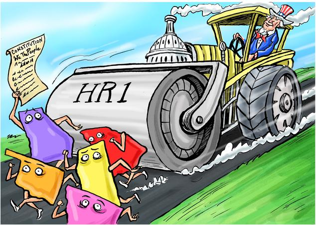
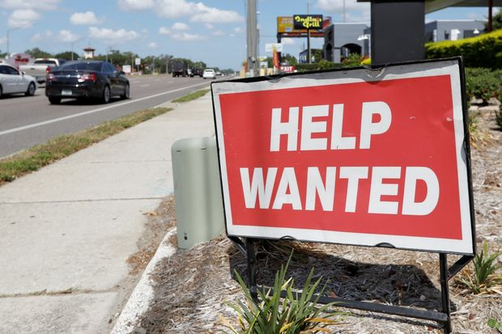
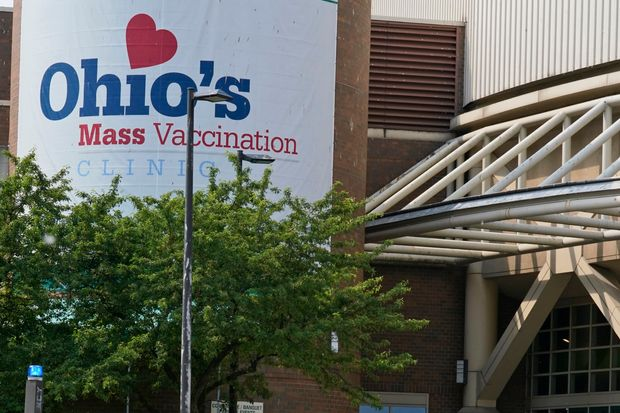
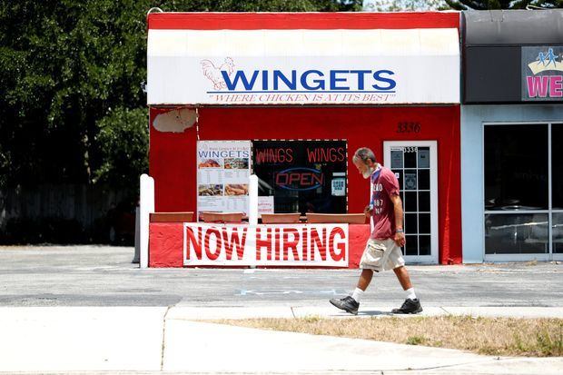
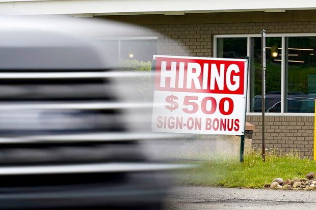
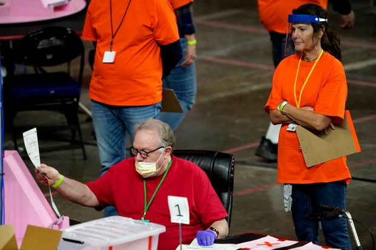
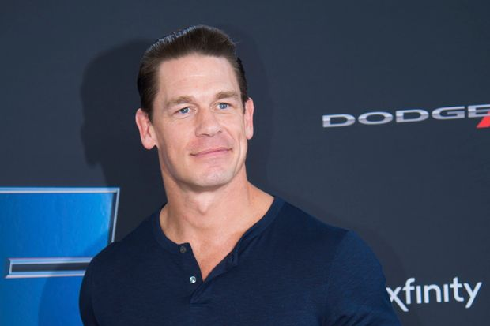

| 时间 | 分类 | 标题 | 副标题 | 正文 | 图片 |
|---|---|---|---|---|---|
| 2021-06-03 19:43:00 | Tech | Google Removes Diversity Executive Over Blog Post About Jews | Kamau Bobb has apologized for 2007 post saying Jews had ‘insatiable appetite for war’ | Google removed a senior member of its diversity team over anti-Semitic remarks in a 2007 blog post, marking the second time in a month that a big tech company has been forced to make a staffing change in the wake of public outcry over an executive’s previous writing. The subsidiary of Alphabet Inc. hired Kamau Bobb in 2018 as global lead of diversity strategy and research, a decade after he published a blog post titled “If I Were a Jew.” In it Mr. Bobb, a recent Ph.D. graduate of the Georgia Institute of Technology, wrote that if he were Jewish that he would “be concerned about my insatiable appetite for war and killing in defense of myself.” The blog post surfaced this week in several news outlets, including the Washington Free Beacon. In a statement, a Google spokeswoman condemned the post and acknowledged that it had caused “deep offense and pain to members of our Jewish community.” |
|
| 2021-06-03 18:56:00 | Logistics Report | U.S. Lawmakers Probe Coronavirus Aid to Yellow Corp. | House panel is investigating whether the trucking company was eligible for the $700 million loan and how it was spent | ||
| 2021-06-03 18:36:00 | Opinion | What Drives Conspiracism | The dominant culture has gone mad. Of course lonely people on the internet believe crazy things. | ||
| 2021-06-03 18:35:00 | Opinion | Anthony Fauci and the Wuhan Lab | Emails add to the mystery over U.S. funds for risky research. | ||
| 2021-06-03 18:34:00 | Pro Cyber News | U.S. Looks Into Cryptocurrency’s Role in Ransomware Hacks | The White House is exploring possible ways to trace transactions that line hackers’ pockets | ||
| 2021-06-03 18:33:00 | Opinion | The Incredible Illinois Gerrymander | Democrats are even rigging state Supreme Court districts. | ||
| 2021-06-03 18:30:00 | Opinion | Powell’s Dollar, China’s Problem | A declining greenback creates a new risk for the global recovery. | ||
| 2021-06-03 18:29:00 | Opinion | Censoring Hong Kong’s Exiles | Police use a new national-security law to bully a Western tech company to shut down speech abroad. | ||
| 2021-06-03 18:28:00 | Opinion | Biden’s Agenda Hits a Senate Wall | The parliamentarian nixes Schumer’s plan to evade the filibuster via ‘reconciliation.’ | ||
| 2021-06-03 18:28:00 | Opinion | How Some Churches Leave Singles Behind | A solution for social distancing may prove applicable after the pandemic is over. | ||
| 2021-06-03 18:27:00 | Books | ‘Beyond: How Humankind Thinks About Heaven’ Review: Life and Limb in the Hereafter | Conceptions of the afterlife are as varied—and as old—as human culture itself. Even among educated secular moderns, heaven persists. | ‘Why is heaven so dull?” asked David Skeel in “True Paradox” (2014). He didn’t mean the actual heaven but the painted ones. “Nearly everyone who encounters a Renaissance painting of heaven and hell . . . notices an odd feature of these paintings: hell is almost always far more interesting than heaven.” Mr. Skeel goes on to suggest that the blandness of heavenly representations may be a consequence of the fact that evil is easier to imagine than its total absence. Yet if we turn away from art to what religious texts and traditions say about heaven, we encounter very little that could fairly be called dull. That at least is my impression upon reading Catherine Wolff’s “Beyond: How Humankind Thinks About Heaven.” Ms. Wolff surveys and reflects on ideas of the afterlife in the ancient world, Judaism, Christianity, Hinduism, Buddhism and post-Christian spiritualism. She also interviews adherents of a wide variety of faiths and finds “as many views as there [are] believers.” But Ms. Wolff, a former director of a Jesuit learning center at Santa Cruz University and the wife of the novelist Tobias Wolff, doesn’t draw from this multiplicity of views the tired conclusion that religious belief must be dying. On the contrary, “the very fact that I could find so many people willing to share their visions with me, in what is a fast-paced, intellectually sophisticated, highly secular environment, is testimony to the continuing relevance and vitality of our quest for life beyond our earthly existence.” Ms. Wolff writes with clarity and style, and she attempts to understand each conception of heaven, however distant from her own Roman Catholic belief, on its own terms. She presents the Zoroastrian afterlife in a way that I suspect Zoroastrians would accept—good and evil souls are judged by the deity Ahura Mazda, and eventually the two sides go to war. To understand modern spiritualism, she visits the Monroe Institute in the Blue Ridge Mountains: Founder Robert Monroe posited something like Buddhism’s Nirvana but with extraterrestrial travel. Indeed, Ms. Wolff put me in mind of a passage in Malcolm Muggeridge’s “Chronicles of Wasted Time”: “Somehow I have always had an inner and unaccountable conviction that any religious expression of truth, however bizarre or uncouth, is more sufficing than any secular one, however elegant and intellectually brilliant.” Conventional wisdom on this topic holds that the Hebrew Bible has no real view of heaven or the afterlife. Ms. Wolff rightly casts doubt on that assumption: The prophet Elijah was taken by God in a chariot of fire; and long before him, Enoch “walked with God: and he was not; for God took him” (Genesis 5:24). Where did God take them if not to some eternity with him? I would also point to the penultimate verse of Genesis, in which Joseph requires his brothers to swear that they will bury his bones not in Egypt but in Canaan, his homeland: “And Joseph took an oath of the children of Israel, saying, God will surely visit you, and ye shall carry up my bones from hence.” Joseph evidently expected some kind of resurrection or, as we would say, afterlife in the land God had promised to Abraham and wanted to be there when it happened. |
|
| 2021-06-03 18:26:00 | Opinion | A Darkness at Yale | The university offers little explanation for changing a 90-year-old governance policy. | ||
| 2021-06-03 18:26:00 | Opinion | The World Needs Answers on Covid’s Origin | China wants the issue to go away. The U.S. should use all of its tools to keep the pressure on Beijing. | ||
| 2021-06-03 18:22:00 | Life & Arts | Using Stress to Get Geared Up for Public Speaking | A behavioral economist answers questions on overcoming anxiety, preventing litter and sticking with bad decisions | ||
| 2021-06-03 17:57:00 | World | F. Lee Bailey, Celebrity Attorney, Dies at 87 | Defended O.J. Simpson, Patty Hearst, alleged Boston Strangler | ||
| 2021-06-03 17:50:00 | CMO Today | MediaMath Explores Strategic Options as Dealmaking in Ad Tech Picks Up | Luma and Centerview Partners are advising the 14-year-old ad-tech company, which has reached out to prospective buyers | ||
| 2021-06-03 17:48:00 | Deals | Pershing Square SPAC Nears Transaction With Universal Music Group | Prospective deal would value record company at around $40 billion or $42 billion with debt, sources say | Breaking News... Hedge-fund billionaire William Ackman’s special-purpose acquisition company is nearing a transaction with Universal Music Group that would value the world’s largest music business at about $40 billion, people familiar with the matter said. The deal would be the largest SPAC transaction on record, exceeding the roughly $35 billion that Singaporean ride-hailing company Grab Holdings Inc. was valued at in a similar deal recently, according to Dealogic. It would have a so-called enterprise value, taking into consideration Universal’s debt, of about $42 billion. It’s not guaranteed Universal and the SPAC, Pershing Square Tontine Holdings Ltd. , will reach a deal. If they do, it could be finalized in the next few weeks and isn’t subject to any additional due diligence, the people said. —Anne Steele and Corrie Driebusch contributed to this article. |
|
| 2021-06-03 17:36:00 | U.S. | Postmaster General DeJoy Investigated by FBI Over Fundraising | Probe focuses on political contributions involving his former business in North Carolina; he denies wrongdoing | WASHINGTON—The Federal Bureau of Investigation is investigating Postmaster General Louis DeJoy over past campaign fundraising activity involving a North Carolina logistics company where he served as chief executive, people familiar with the matter said. Prosecutors issued a subpoena to Mr. DeJoy this week related to his employees’ campaign contributions during his time in the private sector, one person said. Mr. DeJoy, a onetime financial backer of former President Donald Trump and GOP donor, became head of the U.S. Postal Service in 2020. The federal investigation is examining fundraising related to his former business, New Breed Logistics, a North Carolina-based logistics and supply-chain services provider, where he served as chief executive for about three decades before it was sold in 2014 to XPO Logistics Inc. Mr. DeJoy “has always been scrupulous in his adherence to the campaign contribution laws and has never knowingly violated them,” said his spokesman Mark Corallo, who confirmed the investigation. Representatives for the FBI and Justice Department declined to comment. |
|
| 2021-06-03 17:36:00 | U.S. | Minneapolis Moves to Reopen George Floyd Square to Traffic | Spot where Floyd was killed last year by Minneapolis police had become pilgrimage site for racial justice | MINNEAPOLIS—The city of Minneapolis on Thursday began clearing roadblocks and debris in the area that has come to be called George Floyd Square, taking the first steps to reopening it to traffic and police patrols, which have been absent since Mr. Floyd was killed last year. The site at East 38th Street and Chicago Avenue has become a gathering place as a memorial to the 46-year-old Black man and the racial-justice movement sparked by his May 25, 2020, death. The city removed jersey barriers and debris from the area, and it was briefly open to traffic before some residents reconstructed temporary barriers, setting up a tense divide in the neighborhood between those who want to move forward and those who want to preserve a police- and traffic-free zone. “It will be a bit touch and go and difficult over the next several days,” said Mayor Jacob Frey in a media briefing, adding that the effort to reopen the area had strong backing from local businesses and some community groups. Business owners have complained about lack of access for their customers caused by the closing of the several-block area to traffic and about crime that has occurred in the absence of a police presence in the area. |
|
| 2021-06-03 17:28:00 | U.S. | Theranos Founder Elizabeth Holmes’s Emails With Law Firm Allowed at Trial | Judge denies former Silicon Valley star’s request to stop prosecutors from airing exchanges with Boies Schiller | ||
| 2021-06-03 17:00:00 | Business | Breast-Cancer Pill Reduced Recurrence, Death in Early-Stage Patients, Study Finds | AstraZeneca’s drug Lynparza cut combined risk of recurrence of breast cancer or death by 42% among women in study | A drug sold by AstraZeneca PLC and Merck & Co. reduced the recurrence of breast cancer in women with an early but aggressive form of the disease, a long-running international study found. The finding, which on Thursday was published online by the New England Journal of Medicine and released at a major cancer-research meeting, marked the latest advance in cancer treatments targeting the genetic traits of tumors. It could expand the arsenal of weapons against a hereditary form of breast cancer. The result also helps validate the pharmaceutical industry’s investment in a pricey new class of drugs that target cancer cells, known as PARP inhibitors. AstraZeneca’s pill, named Lynparza, has become one of the company’s top sellers, generating $1.8 billion in sales last year. Rival GlaxoSmithKline PLC paid more than $5 billion in 2019 to acquire the maker of another PARP inhibitor, Tesaro. Lynparza carries a U.S. list price of about $14,449 per patient monthly. |
|
| 2021-06-03 16:54:00 | Fed’s Williams Says Economy Far From Levels Needed to Pare Stimulus | ‘I just don’t think the time is now to take any actions,’ New York Fed president says | Federal Reserve Bank of New York leader John Williams said Thursday the U.S. economy remains some distance from where it needs to be for the Federal Reserve to pull back on its $120 billion a month in bond buying stimulus. “The economy has improved and I think it’s on a good trajectory. But to my mind, we’re still quite a ways off from reaching this substantial further progress, you know, we’re really looking for” to start slowing the pace of asset purchases, Mr. Williams said during an interview on the Yahoo Finance channel. |
||
| 2021-06-03 16:49:00 | Politics | Former Treasury Official Sentenced to Six Months for Leaks | Natalie Mayflower Sours Edwards pleaded guilty to making unauthorized disclosures of bank reports after Trump administration crackdown on leaks | ||
| 2021-06-03 16:23:00 | World | Biden Expands Blacklist of Chinese Companies Banned From U.S. Investment | Move shows Biden’s willingness to continue some of the hard-line China policies from the Trump administration | WASHINGTON—President Biden expanded a prohibition on Americans investing in Chinese companies with purported links to China’s military, adding more businesses to a blacklist that has angered Beijing and caused consternation among investors. An executive order Mr. Biden signed Thursday brings to 59 the total number of Chinese companies banned from receiving American investment and shows how his administration is continuing some of the hard-line China policies left by former President Donald Trump. Many of the newly targeted companies are subsidiaries and affiliates of major state-owned companies and other businesses named on the earlier blacklist. They include a clutch of companies tied to the state-owned aerospace giant Aviation Industry Corporation of China and two financing affiliates of telecommunications gear-maker Huawei Technologies Co. The new order prevents Americans from investing in those companies, with a 60-day grace period, until Aug. 2, before sanctions begin and a one-year period for Americans already invested in the firms—either directly or via mutual and index or other funds—to divest themselves. The action is one of the firmest to date as the Biden administration conducts a broad review of China policy, including how to deal with tariffs and other trade measures taken by Mr. Trump. So far the administration has advanced few concrete actions against Beijing, though the U.S. recently joined allies in imposing sanctions against Chinese officials engaged in the mass incarceration of mainly Muslim ethnic minorities in the Xinjiang region. |
|
| 2021-06-03 15:50:00 | World | Afghan Fighter Pilot, Facing Taliban Death Threats, Arrives in the U.S. | The U.S.-trained aviator had last year been denied safe passage in a case that drew ire from inside U.S. military ranks | A celebrated Afghan fighter pilot trained by the American military, who hid for months with his wife and 5-year-old daughter from Taliban death threats, arrived in the U.S. after receiving temporary protection status. Maj. Naiem Asadi’s case came under the spotlight late last year after Washington reversed its initial decision to help him leave Afghanistan and live in the U.S. Maj. Asadi and his family left Kabul on Tuesday after the U.S. Citizenship and Immigration Services, or USCIS, last month granted them parole—a temporary protection status for noncitizens in the country, according to his lawyer. During this period he can apply for asylum, the lawyer said. “You can’t even imagine how happy I am,” Maj. Asadi said on the phone from New Jersey on Thursday, his voice giddy with excitement and his daughter playing noisily in the background. It wasn’t immediately clear why the U.S. provided Maj. Asadi and his family safe passage now. |
|
| 2021-06-03 15:43:00 | Television Review | ‘Lisey’s Story’ Review: The Cult of the Author | Stephen King adapts his own novel about a writer’s widow, played by Julianne Moore, who must contend with threats from this world and beyond. | During the opening moments of the loftily pedigreed, eight-part “Lisey’s Story,” the celebrated writer Scott Landon (Clive Owen) is introduced at the groundbreaking for a Landon-financed library. “There has never been a writer who has so seamlessly joined the realistic and the fantastic,” says the besotted academic at the mic. “Scott Landon is a national treasure.” That Landon, who is about to be shot, sounds something like Stephen King will come as no surprise, especially to Mr. King’s legion of fans, who will be well aware that he wrote the 2006 novel, created the series, adapted its screenplay and serves as an executive producer as well. But what would seem like brand inflation by anyone else is just funny coming from Mr. King, who is rare among writers in that he doesn’t need the hype. His novels and stories have been so commercially successful that it often behooves those writing about him to note that his work is, by the way, of artistic value. His seemingly depthless talents as a creator of characters and plotlines, combined with his popularity, have prompted comparisons to Dickens. They aren’t overblown. What’s noted less often is his sense of humor, especially of the self-deprecating variety, which can be detected in “Lisey’s Story,” if one reads between the often harrowing, horrific and lamp-black lines. “Lisey’s Story,” featuring Julianne Moore in one of her more memorable performances, is not the first King fiction devoted to the life, or death, of writers— “The Shining” and “Misery,” notably, preceded it and elements of both turn up in “Lisey” (rhymes with fleecy, or greasy). The story is also a love letter to the author’s spouse—he has been married to his wife, Tabitha, since 1971—and perhaps to the life partners of artists in general: The Landons’ relationship, depicted via voluminous flashbacks, is beyond symbiotic; Scott’s career would have been impossible without Lisey, whose husband might charitably be described as a mess. Is that a joke? Perhaps, but not in the context of the story. Lisey revisits her marriage throughout the series, either through memory or what seems like telekinesis. She is no clichéd grieving widow, though she grieves. Her more immediate problems, two years after Scott’s death, come from without: the aforementioned academic, Dashmiel (Ron Cephas Jones), who is a Landon fanatic and has been badgering Lisey to free up Scott’s unpublished manuscripts; Dooley (Dane DeHaan), the psychopath whom Dashmiel carelessly enlists to help “convince” the widow to publish those manuscripts; and her sister Amanda (Joan Allen, looking like she stepped out of “American Gothic”), whom most would describe as disturbed or schizophrenic, a cutter and a part-time catatonic. She was also the only one besides Lisey in whom Scott confided, and was his fellow traveler to the world of the Boo’ya Moon—which looks like a mix of the Roman Colosseum and a waterfront purgatory, where troubled souls go to suffer. It is rendered in strikingly haunted fashion by the series director, the gifted Chilean Pablo Larráin (“The Club”), through the indispensable cinematography of Darius Khondji. “Boo’ya Moon” is a King-ism, several of which, mercifully, have not made the transition from novel to TV series. One that has is “bool,” which is what Lisey finds herself on post-Scott—a kind of scavenger hunt that her husband had laid out in anticipation of his demise and which requires her to follow clues all over the Maine landscape, and sometimes beyond terra firma. The outright fantastical elements of “Lisey’s Story,” some being of the monster-in-the woods variety, feel at some point to be in conflict with the more palpable drama at hand—the very present, corporeal menace posed by Dooley, whose combination of misogyny, sadism and Mark David Chapman-like mania (he refers to Lisey as “Yoko,” at one point) makes him truly scary—and this in a production that’s full of mad people. Mr. King has often conflated evil with insanity—rather than, say, ignorance—and it’s a problem, partly because we’re given too much time to think about it. Can we feel the proper loathing toward someone as genuinely bonkers as Dooley? Mr. King makes him a device, a repository of the author’s distaste for the super-fan, or the King scholar, or anyone who thinks he knows the writer better than, say, the writer’s wife. Still, the performance by Mr. DeHaan—of an obsessive immune to the charity in his idol’s work—is morbidly captivating. Even when absent he infects the atmosphere. |
|
| 2021-06-03 15:41:00 | Film Review | ‘Undine’ Review: Catch of the Day | Christian Petzold weaves a contemporary tale inspired by the myth of a water nymph and her human lover. | It says a lot about Christian Petzold’s puzzling but strangely beautiful “Undine” that the two musical mainstays of the soundtrack are the adagio from Bach’s Concerto in D Minor and the Bee Gees’ “Stayin’ Alive.” One is quintessentially classical, the other is a classic in its own right. The serene, meditative Bach passage underscores the myth of Undine, or Ondine as she’s sometimes called, a water nymph who lacks a human spirit until she falls in love, but who is doomed to die if her beloved betrays her. The Bee Gees song punctuates the feminist struggle of the film’s heroine. A museum lecturer and historian played by Paula Beer, this present-day Undine seeks to throw off her mythic constraints and live as full and loving a life as she chooses. (The film, in German with English subtitles, is playing in select theaters and on digital and VOD platforms.) If you care about movie stars who weave subtle but ineffably powerful spells, you should, or already do, know Ms. Beer’s work. Still in her 20s, she has given memorable performances as a grief-stricken young woman in François Ozon’s 2016 “Frantz”; as an enchanting art student in Florian Henckel von Donnersmarck’s 2018 “Never Look Away” and as an anguished, elusive beauty in Mr. Petzold’s “Transit,” which was released here in 2019. (Her co-star in that film, as in “Undine,” was another extraordinary German actor, Franz Rogowski; more about him, and them, in a moment.) Spells cast in movies must always be a collaboration between star and director. The first shot in Mr. Petzold’s new film offers a prime example. He holds the camera close on Ms. Beer’s face as Undine thinks about something with great concern. Or maybe she’s listening to something intently, except that we hear nothing but traffic noise in the distance. No answer to the mystery is forthcoming for almost half a minute that’s mesmerizing and dialogue-free. Then the situation clarifies. She’s at an outdoor café table with the man she loves, Johannes (Jacob Matschenz), and he’s in the fitful process of explaining why he’s going to leave her. Undine makes herself abundantly clear a moment later when she says, with eerie calm, “If you leave me I’ll have to kill you. You know that.” She is playing out another part of the myth—not a bad start for any movie, and a fine way to open this one. (Mr. Petzold’s longtime collaborator Hans Fromm did the luminous cinematography.) Some of the film’s fascinations, and considerable frustrations, turn on who knows what about the tale that inspired it. Does Johannes know that he’s a goner, according to mythic rules? No reason why he should. A similar question applies to Mr. Rogowski’s Christoph, an industrial diver who wears an old-fashioned diving suit right out of Jules Verne—plus modern scuba gear—when he plunges into local rivers to repair broken turbines. Does Christoph know why he’s so fatefully drawn to Undine after listening to one of her briskly informative lectures? No, the rules of Mr. Petzold’s screenplay dictate that he can’t comprehend his role in her life. But Undine knows. She knows all too well that she’s supposed to return to the water, since Johannes has been unfaithful, and that she wants desperately to remain human, bathed in Christoph’s love. So much for the characters in the story. There’s also the question of what the audience is supposed to know in order to enjoy the drama on its own terms. It’s all well and good for those who are conversant with the myth in all its details, but how does Mr. Petzold’s film look to those who are not? I was somewhere in between. I knew the title character possessed mythic resonance, remembered such cultural watersheds as “The Little Mermaid,” “Splash” and “The Shape of Water,” and recalled that Audrey Hepburn had starred on Broadway a long time ago in “Ondine,” a version of the myth written by the French playwright Jean Giraudoux. So I did have a general sense of the heroine threatened by some dark fate. There was also a lot I didn’t understand. We had never seen Undine in her previous aquatic incarnation, so some of her connections with Christoph, the diver, seemed not so much magical as arbitrary, confusing or a bit silly. |
|
| 2021-06-03 15:37:00 | Film Review | ‘The Conjuring: The Devil Made Me Do It’ Review: An Exorcism Is Only the Beginning | The third film in the horror franchise starring Patrick Wilson and Vera Farmiga as paranormal investigators finds the couple entangled in a case of demonic possession. | When a horror film—or any film, for that matter—starts super-high, with all its firepower on display, the question is always where it can go from there. “The Conjuring: The Devil Made Me Do It” starts as scarily, joltingly, shockingly high as any devotee of the genre could ask for. Then it settles down, regroups with aplomb and moves to a courtroom where an intriguing, based-on-a-true-story trial is about to begin—the defendant in a particularly grisly murder case pleading not guilty by reason of demonic possession. That’s good, and the sequence gets even better when the jury greets the announcement with silence and straight faces. But it’s the last we see of the trial. Soon this third film in a trilogy that began in 2013 goes all over the literal and paranormal maps—tracking a curse so widely distributed that it loses its grip on its prime target, meaning us. That’s not to say this installment, set in the early 1980s and directed by Michael Chaves rather than the masterly James Wan, who did the first two, has no pleasures to confer. Patrick Wilson and Vera Farmiga are back as fictional versions of the self-declared demonologist Ed Warren and his supposedly clairvoyant wife, Lorraine. The fun in their performances springs, as always, from their irony-proof solemnity—you can tell that this is seriously soul-shaking stuff from Ed’s unswervingly earnest demeanor and Lorraine’s perpetually pained one. Mr. Chaves, whose previous feature was 2019’s “The Curse of La Llorona,” knows his horror tropes: slow descents into dark and therefore sinister spaces, unseen and malign forces at work (a chainsaw with an inner life). And he and his writer, David Leslie Johnson-McGoldrick, come up with a good one of their own, a waterbed that spurts presumably unholy water under lethally high pressure. The bed belongs to a sweet-faced 8-year-old named David (Julian Hilliard); he’s the subject of an exorcism that should have been successful and the movie’s climax. Instead, it serves only to kick off the demonic festivities, since the animating evil of the story skips from David to Arne Johnson—good and affecting work by Ruairi O’Connor—a friend of the family who intends to marry David’s sister. (Arne is the one who ends up in court as an accused murderer. All you should know about the ostensible homicide is that it takes place in a kennel, accompanied by the barking, and slavering, of many dogs. But don’t worry about the pooches. This isn’t “The Thing.”) The cinematographer was Michael Burgess. The production was designed by Jennifer Spence. They and a sound-design team do their impressive best to give the film an aura of elegance. Still, fatigue has caught up with the Warrens, and the question about the franchise is not where it can go from here, but how much longer it can be sustained by humdrum deviltry. Write to Joe Morgenstern at joe.morgenstern@wsj.com |
|
| 2021-06-03 15:36:00 | Opinion | ‘Hedda Gabler’ Review: Ibsen With a Modern Twist | The Undermain Theatre’s webcast of the classic play about a stifled Victorian woman feels fresh thanks to an updated text. | ||
| 2021-06-03 15:34:00 | Television Review | ‘Domina’ Review: Power-Hungry, Provocative, Poisonous | On Epix, the soon-to-be Roman Empress Livia Drusilla makes her way to the top of a divided republic with cunning, sex and murder. | It was no accident that Tony Soprano’s poisonous mother was named Livia. Her namesake empress, as played by Siân Phillips in that old Roman chestnut “I, Claudius,” can chill the blood 40-odd years later. The real-life Livia Drusilla, later Julia Augusta, is remembered by history as cunning, ruthless, power mad, homicidal and the matriarch of a line of ancient lunatics—Caligula was her great-grandson, Nero her great-great-grandson. She wasn’t a feminist, exactly; she had her wiles and her ways. “You never forget your first,” we hear her say in the opening moments of the swords-and-sandals soap opera “Domina.” It certainly gets one’s attention. But what she’s referring to is murder. Understanding how she became what she was is the promise—and premise—of this eight-part drama (rolling out with new episodes on Sunday nights at 10 on Epix), but so is a generous helping of beautiful people doing horrible things en route to creating an empire. Situated largely in a sex-saturated Rome where everyone has a British accent and Julius Caesar has just been assassinated, “Domina” (dominus being Latin for lord and/or master) finds the Roman Republic in tatters. The young Livia (Nadia Parkes) is poised to become both the wife of Tiberius Claudius Nero (not that other Nero) and collateral damage in a civil war incited by Gaius Julius Caesar (Matthew McNulty). Gaius, adopted son of Julius, will eventually become the Emperor Augustus and Livia’s husband, though not in that order—Livia learns the rules of power grabbing, and rule 1 is securing the right husband. She already knows how to deal with mean girls. “I’m younger, prettier and richer than you, so why are you laughing at me?” she asks a pair of rivals, one of whom is Gaius’ wife, Scribonia (Christine Bottomley), who will come to hold several justified grudges. But because Livia’s beloved father, Livius (Liam Cunningham), has sided with the exiled Brutus and Crassus in the Roman conflict, it forces his daughter and her Nero (Enzo Cilenti) to flee with their child into hostile territory where Livia is subjected to a kind of basic training for the political unpleasantries to come. Her best friend, the formerly enslaved Antigone (Colette Dalal Tchantcho), has it even worse, finding herself under the thumb, and the clientele, of the grotesque brothel owner Balbina (Isabella Rossellini, a Roman spectacle unto herself). Balbina’s fate is a forerunner to the poisonings and slaughter Livia and Antigone, too, will make into their legacy. It sets a certain tone. Ms. Parkes is quite affecting and attractive and convinces us there is steel beneath the pampered exterior of the empress-to-be. But she says ciao after episode 2: Polish actress Kasia Smutniak, just a tad older than Ms. Parkes, will play Livia for the rest of the series, but those six installments were not made available for review (which is a bit odd, as the series has already made its debut in the U.K.). Assuming the entire series doesn’t follow the example of one of Livia’s victims and drop completely dead, it will serve up a mix of eroticism and politics, and be granted some gravitas by its allegiance to history. (The names of Roman nobility can be confusing—see Nero vs. Nero—but “Domina” strives for accuracy, if not clarity.) Viewers might want to break out the XXL togas, because “Domina” does run a bit hot, and certainly fierce. |
|
| 2021-06-03 15:32:00 | Opinion | What Would Help Fight Big Apple’s Crime? | Stop-and-frisk was successful by any standard. | Ray McGuire’s “NYPD Can’t Fight Crime on Its Own” (op-ed, June 1) is untethered to reality. Stop-and-frisk was successful by any standard. It may have become overused at some point, but it clearly resulted in the drastic reduction in people carrying guns and dealing street drugs because of fear of getting caught. Calling the procedure flawed because of “discrimination” ignores the undeniable fact that the vast majority of violent crimes in the city occur in minority neighborhoods and are committed by minorities. The view that “mental-health or substance-abuse crises” aren’t police issues is misleading, and to suggest that trained nonpolice intervenors answer 911 calls is naive. After that concerned neighbor calls 911 in the middle of the night because of the loud shouting and smashing noises next door, the response needs to be police. Why? Because no one knows what’s behind that door. But most times that door doesn’t open, and probable cause exists that crimes are being committed or people are in danger and the police must force entry and all too often must deal with a dire and dangerous situation as best they can in a few seconds. The notion that trained social workers and “de-escalation” experts, no matter how skilled and well intentioned, will resolve these situations is wrongheaded. If that door opens to reveal a clearly deranged person with, say, a machete or a gun, there will be no time to redo the situation by now summoning the police. Mr. McGuire’s other thoughts—better treatment options for the mentally ill and no bail for violent recidivists—are all great policies. Matt Farley Delray Beach, Fla. |
 |
| 2021-06-03 15:31:00 | Opinion | Stockpile and Plan Better for Next Epidemic | To ensure future readiness, policy solutions should increase visibility with the Strategic National Stockpile | In “Beat Tomorrow’s Pandemic Today” (op-ed, May 24), Dr. Scott Gottlieb correctly points out that shoring up manufacturing capacity is critical for ensuring America’s healthcare system is prepared to respond to future pandemics and the other myriad challenges facing the system. Having a robust and resilient supply chain is essential to fostering a safe and steady supply of medical products and supporting an effective response. Congress took an important step toward strengthening the supply chain by including provisions in the Cares Act that enhanced reporting requirements for manufacturers. However, more can and should be done. Policy makers should pursue solutions that leverage the global nature of the supply chain to build in redundancies, shoring up domestic manufacturing through positive and long-term incentives as well as geographically diverse sourcing to help prevent supply disruptions for both raw materials and finished products. To ensure future readiness, policy solutions should increase visibility with the Strategic National Stockpile, a critical stopgap, as to when inventory is available and can be quickly disseminated to meet surge needs or to pivot as needed. The U.S. can be further nimble where the Food and Drug Administration and other stakeholders have greater upstream transparency for key products and permit access to that information in advance of a public-health emergency. There is great progress to date, and we can further build on efforts for our future national security and public health with critical visibility, collaboration and timely information sharing. Khatereh Calleja President and CEO |
 |
| 2021-06-03 15:30:00 | Opinion | Exxon Proxy Coup Was Mostly by Nonowners | Individual investors in Exxon Mobil effectively have no say in the company’s governance thanks to this crazy proxy system. | Regarding your editorial “The Proxy Coup at Exxon” (March 27): Talk about rigged elections, the current proxy system is far worse and poses a serious danger to capitalism and our economy. When a few individuals such as BlackRock’s Larry Fink, Calstrs’s Chris Ailman and similar large fund aggregators (not to mention the adviser duopoly) are allowed to vote the gazillion shares in their index and other funds, it is bizarre. They have no idea how the millions of investors in their funds might vote. Instead they substitute their own view, whether it is based on wokism, politics, marketing or whatever. Effectively they hijack the company’s governance. Individual investors in Exxon Mobil , who presumably follow the company’s actions to some degree, or they wouldn’t own it, effectively have no say in the company’s governance thanks to this crazy proxy system. Wayne J. Seltzer Las Vegas Perhaps you will someday be running a sequel involving lawsuits by the investors and beneficiaries of those funds suing their boards for misusing the funds’ resources on their own personal “progressive” political agendas. |
 |
| 2021-06-03 15:23:00 | Life & Arts | The Covid Calculus of Herd Immunity | An equation developed to explain population growth also applies to the spread of a virus and how to stop it | Mathematician Eugenia Cheng explores the uses of math beyond the classroom. Read more columns here. As the roll out for Covid-19 vaccines continues, many people have questions about the idea of herd immunity. After all, vaccines are not just for those who receive them; they are also intended to protect those who can’t or don’t get the shot. Herd immunity doesn’t mean that everyone is somehow immune by association. Rather, it means something quite precise mathematically. The starting point is that viruses spread exponentially: Each person infects, say, three people on average, and each of those people goes on to infect three people, and so on. The number of infected people is repeatedly multiplied by 3 (in this hypothetical example), and repeated multiplication is the definition of an exponential in mathematics. If we repeatedly multiply by any number greater than 1, the result grows increasingly rapidly; this is exponential growth. If we repeatedly multiply by any number less than 1, even 0.999, the result gets smaller and will eventually be very close to 0. That is exponential decay. The aim is to get the infection rate to less than 1—even slightly—so that the virus will die out. In practice, however, even if the infection rate remains above 1, the virus can’t keep spreading forever, because we have a finite population and at some point the virus will run out of people to infect. So the rate at which a virus spreads is proportional to the number of infected people and the number who remain uninfected and not immune. |
|
| 2021-06-03 14:59:00 | U.S. | Supreme Court Draws Limit to Anti-Hacking Law | A 6-3 decision aligns three Trump nominees with three liberal justices | WASHINGTON—The Supreme Court Thursday narrowed the scope of a federal anti-hacking law, ruling that it doesn’t cover individuals who use their authorized access to obtain information for improper purposes. The decision came in the case of a police officer who ran a woman’s license plate in exchange for cash from a man, something that “plainly flouted his department’s policy,” Justice Amy Coney Barrett wrote for a 6-3 court. But his action didn’t violate the Computer Fraud and Abuse Act of 1986, which authorizes up to 10 years imprisonment for anyone who “intentionally accesses a computer without authorization or exceeds authorized access” to obtain computer information. In a 20-page opinion that, among other features, focused on the grammatical significance of the modifier “so,” Justice Barrett drew a sharp distinction: The law covers people who, although they are authorized to use a computer system, obtain files that are off-limits to them. But it doesn’t reach those who are entitled to access particular information—like Nathan Van Buren, a former Cumming, Ga., police sergeant who was authorized to use the motor-vehicle database—even if they misuse the data they pull. To read the law more broadly “would attach criminal penalties to a breathtaking amount of commonplace computer activity,” Justice Barrett wrote. “Employers commonly state that computers and electronic devices can be used only for business purposes. So on the Government’s reading of the statute, an employee who sends a personal e-mail or reads the news using her work computer has violated the CFAA,” she wrote. Likewise, many websites and online services impose fine-print terms and conditions that sweep broadly but rarely are read. The government’s theory would “criminalize everything from embellishing an online-dating profile to using a pseudonym on Facebook,” Justice Barrett wrote, citing an argument Berkeley law professor Orrin Kerr raised in a friend-of-the-court brief. |
|
| 2021-06-03 14:40:00 | Tech | Apple Prepares Office Staff for Hybrid Workweek | iPhone maker wants staff to come to the office three days a week starting in September | Apple Inc. is telling office staff to prepare to return to the workplace at least most of the time, joining the growing pool of companies adopting hybrid work. Apple Chief Executive Tim Cook, in an email to staff, told office employees that they are expected to return to their workspace three days a week starting in September. The iPhone maker said it wants most office workers to show up Mondays, Tuesdays and Thursdays, with the option to work remotely on Wednesdays and Fridays. Technology news outlet The Verge earlier reported the back-to-office plans. Apple already has gradually been reopening its retail stores around the world. In March, all of its 270 U.S. retail outlets welcomed back shoppers. In his note to employees, Mr. Cook said all stores in other markets would open their doors again by the end of the month. Companies across industries are adopting plans to go back to the office, but many offering staff greater flexibility than pre-pandemic. |
|
| 2021-06-03 14:30:00 | CFO Journal | Motorola Solutions Raises Spending on Body Cameras to Grab Market Share | The equipment maker expects revenue in its video-security business to jump more than 20% this year after a 30.7% leap last year |  |
|
| 2021-06-03 13:25:00 | World | Europe Pushes Alternative to U.S.-Backed Covid-19 Vaccine Patent-Waiver Plan | EU stance makes a quick deal on the waiver proposal less likely, and could sink it altogether, experts say | The European Union is pushing back hard against U.S.-backed calls to temporarily waive intellectual property rights for Covid-19 vaccines, preparing a rival plan that officials said would better safeguard drug companies’ patents and look for other ways to boost supplies for developing countries. As the gap between vaccine haves and have-nots has widened, Washington and China have endorsed a proposal by developing countries at the World Trade Organization to suspend patent protections for the immunizations. Brussels’ alternative plan would lift export restrictions on vaccines and their raw materials, expand manufacturing capacity around the world, and make it easier for countries to use existing rules to override patents in some cases, according to documents reviewed by The Wall Street Journal. The EU’s stance makes a quick deal on the waiver proposal less likely, and could sink it altogether, trade experts say. EU officials said they would present the proposal at the WTO next week, when members are also set to debate the waiver. They argue that removing patents won’t do much to help increase production in the short term and would remove incentives for pharmaceutical companies to do further work, such as updating vaccines for virus mutations. |
|
| 2021-06-03 13:16:00 | Politics | U.S. to Share Bulk of Donated Covid-19 Vaccines Through Covax Program | About 75% of the doses will go to Covax, remaining 25% will go to countries experiencing surges in cases, neighbors, those who have requested help | The Biden administration said Thursday it would work through the international Covax effort to share the bulk of the 80 million Covid-19 vaccine doses it plans to send to other countries by the end of June. Officials had previously announced the number of doses they would be sending overseas, but they hadn’t detailed where they would be going. Dozens of countries, including Pakistan, Afghanistan, Bangladesh and Sri Lanka, petitioned the U.S. for a portion of the doses. About 75% of the vaccines will go to Covax, a multibillion-dollar program to immunize the world against Covid-19 that has been struggling with supply, and they will be targeted to countries in Latin America and the Caribbean, South and Southeast Asia, and Africa, in coordination with the African Union, the White House said. The remaining 25% will go to countries experiencing surges in cases, neighbors and those who have requested help from the U.S. “As long as this pandemic is raging anywhere in the world, the American people will still be vulnerable,” President Biden said in a statement. Jake Sullivan, Mr. Biden’s national security adviser, said the U.S. would work closely with Covax and the countries receiving the doses. The U.S. will decide where to send the vaccines through Covax in consultation with the program’s officials on their logistics and delivery capacity, he said. |
|
| 2021-06-03 13:02:00 | Markets | Government Bond Yields Expected to Stay Low as Inflation Fears Ease | Investor worries about tighter policy from central banks have calmed | U.S. and European government bond yields ticked higher Thursday after strong business survey readings in Europe, but investors said the recent rise was overdone and that fears inflation would soon cause central banks to lift interest rates had subsided. Encouraging figures in the European services industry purchasing managers’ surveys buoyed hopes around the reopening of the economy, though the continent’s inflation outlook remains much weaker than in the U.S. The European Central Bank will likely signal no change in the size of its bond buying at next week’s rate-setting meeting, investors said. German 10-year yields inched up to minus 0.181% Thursday, below the recent two-year high of minus 0.108%, according to Tradeweb. U.S. 10-year Treasury yields were also marginally higher at 1.627% from 1.591% on Wednesday. This is also below a recent high of 1.683% and the March highs of about 1.73%. Yields have risen sharply and bond prices fallen in recent weeks as investor concern grew that rising inflation would lead central banks to start tightening their monetary policy by reducing their bond purchases. In Europe, some ECB board members suggested that the central bank should start dialing down bond purchases even though inflation expectations in Europe remain subdued. However, Isabel Schnabel, the central bank’s executive board member from Germany, has since said that cutting monetary support too early would be a great mistake. |
|
| 2021-06-03 13:00:00 | Markets | Services Boom? You Ain’t Seen Nothing Yet | U.S. service sector is already growing rapidly but is only set to accelerate | If you think the service economy is growing full-bore now, just wait to see what happens next. The Institute for Supply Management on Thursday reported that its index of services activity rose to 64 in May from 62.7 in April, registering the highest level in its 24-year history. Anything over 50 indicates expansion. The details of the report were uniformly strong. All 18 of the services industries surveyed by ISM reported growth, and underlying indexes on the current pace of business, orders and employment were all solid. It was also clear that services industries are having a hard time keeping up, with order backlogs piling up, supplier deliveries slowing and labor and commodities often hard to secure. Considering the progress made in the fight against the pandemic, as well as anecdotal reports on the economy and what you can see with your own eyes, the strength of the services sector isn’t surprising. The share of U.S. adults who are fully vaccinated against the novel coronavirus rose to 51% at the end of last month from 39% at the end of April, according to the Centers for Disease Control and Prevention, and the country recorded less than half as many new Covid-19 cases in May as in April. Also in May, the CDC said that fully vaccinated people need not wear masks in most settings, leading states to relax restrictions, while warmer weather made Covid-19 workarounds like outdoor dining easier. |
|
| 2021-06-03 12:53:00 | Life & Arts | Turkey-Zucchini Meatballs With Green Yogurt and Saffron Rice | Everything comes together quickly and can be prepared in advance, making this elegant dish easy to tote along to a picnic or potluck | To explore and search through all our recipes, check out the new WSJ Recipes page. | |
| 2021-06-03 12:52:00 | Markets | Cloud Software’s Low-Hanging Fruit Is a Tempting Target | Dropbox and Box are the cheapest cloud stocks, which has activists smelling opportunity | Can New York investors breathe life into two former stars of Silicon Valley? They seem at least willing to try. The Wall Street Journal reported Wednesday that activist investor Elliott Management has taken a “sizable” stake in Dropbox —one second only to that of co-founder and current Chief Executive Officer Drew Houston. That news comes just weeks after rival activist Starboard Value escalated its fight with Box Inc. into a full-blown proxy battle that would, if successful, result in the removal of co-founder and CEO Aaron Levie from that company’s board. Box and Dropbox will both attest to their differences. But the two share some key similarities aside from their names. Both have their roots in offering cloud-based data storage and collaboration services to businesses and consumers. Both were also once near the pinnacle of Silicon Valley’s unicorn herd, fetching multi-billion valuations in the private markets before going public. While seemingly commonplace now, only three other companies fitting that definition went public in 2015 when Box took the plunge, compared to 13 in 2019, according to The Wall Street Journal’s research. Dropbox was valued at $10 billion before going public in early 2018. Box and Dropbox share another key trait: Both have largely languished since their initial public offerings. Box carried a market value of about $2.8 billion before Reuters reported in early February that Starboard was considering a board challenge, compared with its closing value of $2.7 billion on the day of its IPO. And Dropbox has spent most of the last year under the $10 billion level it landed in private transactions. That has made them the cheapest among cloud-software providers, with multiples around five times forward sales. Stocks in the BVP Nasdaq Emerging Cloud Index carry a median multiple of more than 12 times forward sales, and more than a dozen trade for more than 20 times. It should come as little surprise that activists have come knocking, and their timing is good. Cloud stocks have sold off as investors have rotated out of riskier names; the BVP index is down nearly 9% this year. That could draw out strategic interest. Cloudera was just picked up by a pair of private equity buyers for $5.3 billion, and Salesforce paid top dollar for Slack Technologies in December. |
|
| 2021-06-03 12:49:00 | Life & Arts | Turkey Meatballs Recipe: The Secret to Making Them Succulent | Add grated zucchini to the mix to bring moisture to your meatballs. Serve them over saffron rice with an herby yogurt sauce, and you have an easy, elegant meal perfect for picnics, potlucks or any night of the week. | THROUGHOUT THE Hudson Valley of New York state, people rely on Talbott & Arding Cheese and Provisions to fuel weekend adventures and impromptu gatherings. Chef Mona Talbott applies her classical training to a range of deceptively simple prepared dishes that travel well. “It’s clean food,” she said. “And the beauty lies in the details.” In Ms. Talbott’s second Slow Food Fast recipe, she makes turkey meatballs fresh and tempting with the addition of grated zucchini, basil, scallions and cayenne. “Turkey can be a bit dry, but the zucchini brings moisture,” she said. Ms. Talbott serves the meatballs on a mound of saffron rice with an herby, jalapeño-spiked yogurt sauce. Everything comes together quickly and can be prepared in advance, making this elegant dish easy to tote along to a picnic or potluck. At home, it’s a wholesome, satisfying meal worth bringing into the regular rotation. To explore and search through all our recipes, check out the new WSJ Recipes page. —Kitty Greenwald is a chef, food writer and the co-author of ‘Slow Fires’ (Clarkson Potter) |
|
| 2021-06-03 12:26:00 | Opinion | H.R.1 Would Steamroll the Constitution | Democrats want the feds to run elections, usurping authority the framers assigned to the states. |  | |
| 2021-06-03 12:13:00 | Business | Restaurants, Supermarkets Can’t Find Enough Workers to Open New Locations | Higher costs for pay and benefits weigh on operations, threaten to limit growth | The tight labor market is hampering new restaurant and supermarket openings, putting a potential check on growth in a food industry that is being reshaped by the pandemic. Many food sellers are adding stores to capitalize on high consumer spending as Americans emerge from a year spent largely at home. But grocers and restaurants say they are struggling to hire all the workers they want for these stores. They are adding perks and bonuses to entice job seekers and in some cases delaying openings. Grocer Earth Fare said it is offering more jobs on the spot as it seeks to hire hundreds of people at five new stores in North Carolina, Ohio and elsewhere this year. Some supermarkets are adding referral and signing bonuses. Shake Shack Inc. said hiring is a top concern as it seeks to open as many as 40 burger restaurants this year. “It will not be easy over this next year,” said Chief Executive Officer Randy Garutti. There were a record-high 8.1 million unfilled jobs at the end of March, according to the Labor Department, including 993,000 at restaurants and hotels and 878,000 at stores. Businesses that can’t fill jobs may close a part of a restaurant, stock shelves more slowly or serve fewer customers—accommodations that could reduce sales and, economists say, act as a brake on what otherwise is expected to be strong economic growth this year. |
|
| 2021-06-03 12:08:00 | Risk & Compliance Journal | EU Court Backs Tesco Staff in Equal Pay Rows, Echoing U.K. Supreme Court in Asda Case | The EU Court of Justice has backed aspects of claims by 6,000 Tesco employees regarding equal pay | ||
| 2021-06-03 12:05:00 | World | Netanyahu Intensifies Pressure to Break New Israeli Coalition | Leader accuses his rivals of yielding to demands from an Arab coalition partner over illegal housing, a divisive issue in the country | TEL AVIV—Israeli Prime Minister Benjamin Netanyahu is trying to rally his right-wing base against a new ruling coalition that includes, for the first time in the country’s history, an independent Arab party that would have a role in shaping the policies of the predominantly Jewish state. Less than an hour before a midnight Wednesday deadline, Naftali Bennett, who heads the right-wing Yamina party, and Yair Lapid, who leads the centrist Yesh Atid party, agreed to form a coalition government that would dislodge the incumbent. The coalition would include six other parties from across the political spectrum, including one of Israel’s Arab parties, Ra’am. The coalition, if approved by the Knesset, would be the most ideologically diverse in Israel’s history. But Mr. Netanyahu, in a jab to his right-wing rival, accused Mr. Bennett of giving in to Ra’am’s demands, especially regarding the relaxing of policies aimed at preventing illegal building by Arab communities in the Negev Desert region in southern Israel. “Bennett sold the Negev to Ra’am,” Mr. Netanyahu tweeted Thursday. “Every lawmaker voted in by right-wing votes must oppose this dangerous left-wing government.” Mr. Netanyahu was raising an issue that is highly sensitive, and often divisive, among the country’s Jews and Arabs. Unsanctioned house-building by Muslim Arabs in the Negev Desert is opposed by many in the right-wing camp, who accuse the communities there of illegally seizing large tracts of land. The Bedouin communities that live in the Negev Desert insist that they have been forced to build illegally because the state hasn’t provided sufficient permits to settle on what they say is their ancestral land. |
|
| 2021-06-03 11:52:00 | Opinion | Worst Worker Shortage Getting Even Worse | Latest NFIB employment survey finds another record number of unfilled job openings. | What will it take to persuade potential workers to join the U.S. labor force? American small businesses have never had such a hard time trying to attract new employees. That’s according to the May employment survey from the National Federation of Independent Business, due out later today. “Strong job growth eased in May as small businesses struggled to find workers to fill open positions,” reports NFIB Chief Economist William Dunkelberg. He notes that survey respondents with unfilled job openings “increased from 44 percent to 48 percent, seasonally adjusted. May is the fourth consecutive month setting a record high reading for unfilled job openings. May’s reading is 26 points higher than the 48-year historical average of 22 percent.” He adds that the labor shortage is particularly acute in industries like construction, where 66% of surveyed firms reported few or no qualified applicants, an increase of 6 percentage points from the April survey. It seems that these days good help—and really any kind of help at all—is hard to find. As the economy reopens even in states where governors have practiced a near-religious devotion to lockdowns, the desire to hire almost seems to be on fire. The NFIB economist reports: Do the bosses of American small firms think they will be able to add staff without offering greater incentives? They do not, says Mr. Dunkelberg: This is great news for U.S. workers. Of course there is a small catch when those workers start spending the money from their elevated paychecks. Mr. Dunkelberg reports, “Higher labor costs are being passed on to customers in higher selling prices.” |
 |
| 2021-06-03 11:25:00 | Life & Arts | Why ’90s Spaghetti Straps Are Trending This Summer | If you watched the ‘Friends’ reunion, you know Jennifer Aniston’s character Rachel Green was a spaghetti-strap zealot. This summer, her skimpy ’90s tops get updated for grownups with lush textures and prints. Here, a few to try. | IT’S STARTING to feel like summer in much of the country. That first thick taste of humidity can shock the system, but it’s a welcome excuse to de-sweater and explore the flimsy side of fashion again. After our collective hibernation, designers seem to recognize that women want to show a little skin. Now trending: the spaghetti-strap tank. Tops with barely there straps are experiencing a resurgence thanks in part to the influence 1990s style icons are having on young influencers. From the buzz around the “Sex and the City” and “Friends” reunions (both Jennifer Aniston and her “Friends” alter ego Rachel Green zealously favored spaghetti straps) to the archival Naomi Campbell and Gwyneth Paltrow photos flooding social media, skinny-strapped camis are weighing lightly on our minds. Factor in shoppers’ itch for bare-shoulder escapades and you have the perfect summer storm. “We were thinking about how people will want to live again [this summer] and show skin and feel light and airy,” said Steven Cateron, creative director at Rebecca Taylor. Summer’s spaghetti-strap tops are more conspicuously designed than the hyper-minimal styles of the ’90s. Luxury brand Khaite, for instance, offers a plunging black iteration with soft ruffles, while contemporary label Tove sells a gathered, polka-dotted version with delicate, corset-like boning (pictured at left). But even with such distractions, slight straps can be intimidating—especially for anyone old enough to have experienced this trend its first time around. To get comfortable with the top’s skimpiness, “style it with a little cardigan over it or another shirt,” said Mr. Cateron. “And then as the day warms up...just take that piece off.” Consider your cardigan a grown-up security blanket. If you plan to venture beyond your backyard in these revealing tops—paired perhaps with light-wash jeans or a long, flowing summer skirt—pick one in a substantial fabric. Avoid anything flimsy enough to be an undershirt. Mr. Cateron considered this while designing a palm-printed top in Viscose for Rebecca Taylor (pictured at left). “It has a really nice weight to it,” he explained. “It’s not too thin or too sheer...it’s not like you’re naked.” Here, three liberating—but not too-revealing—spaghetti-strap tanks to try this summer. The Wall Street Journal is not compensated by retailers listed in its articles as outlets for products. Listed retailers frequently are not the sole retail outlets. |
|
| 2021-06-03 10:25:00 | Life & Arts | Do Farmhouse Sinks Make Sense Without a Real Farmhouse? | The bulging vessels appear in Hamptons beach houses and San Francisco townhouses. Some say they’re charming and chic. Others think they’re silly and overused. Here, design pros fight it out. | For the recurring series, That’s Debatable, we take on a contentious issue of the day and present two spirited arguments—one in favor and other emphatically opposed. Previous installments from the series are here. Apron-front sinks are a key component of the American pastoral-homestead fantasy, thanks (in part) to Chip and Joanna Gaines, who push the modern-farmhouse aesthetic on HGTV. And though design pros have been forecasting that aesthetic’s demise for a couple of years, the ultra-deep and wide basins that go with it remain remarkably popular. One maker, Kohler, reports five years of steady sales growth for the sinks. Matthew Quinn, principal of Atlanta’s Design Galleria Kitchen and Bath Studio, said that his clients have lately been requesting a stainless steel version, a better match for modern kitchens. Why does he remain loyal to the style? He cites one of its many practical advantages: “If you’re shorter the access is much easier,” because there’s no counter between you and the sink. Another plus: The added depth is a boon if you’re bathing a dog, noted Bellport, N.Y., designer Tricia Foley, author of the new book “A Summer Place” (Rizzoli). Ms. Foley also loves that you can arrange flowers in them without spewing petal confetti all over—and pile dirty tableware out of sight until you’re ready to wash up. “I’ve used them as ice buckets for parties,” she said of the cavernous receptacles. “Just fill the farmhouse sink with ice and lots of bottles of rosé.” Another interior designer who installed one of the tubby sinks in her own home, Nashville’s Stephanie Sabbe, enthused: “I loved bathing all my children in it—duh!” Looks, too, were a consideration. “It’s just such a nice detail, especially if you can afford to make them out of stone,” she said. Pros also praised the patina the apron-front can develop. “We all got so obsessed with everything being bulletproof,” Ms. Sabbe said, “but you don’t go into old homes in Europe and think, ‘Oh my gosh, there’s paint peeling!’ You’re like, ‘This is beautiful.’” The look only clicks in a traditional scullery, said Houston designer J. Randall Powers. “What I hate is the entire Kardashian approach to design—‘Well, it’s popular, let’s do it,’” he said. The proud belly of the sink can be a scene stealer. In mellow kitchens that evolved over time, “they feel OK,” said architect Thomas A. Kligerman, partner at New York-based Ike Kligerman Barkley, who lived in a 300-year-old farmhouse in Normandy, France, in his teens. But “that charm gets a little lost when you insert one into a modern kitchen. In some ways it almost makes too big a deal of the sink.” |
|
| 2021-06-03 10:22:00 | World | Russia’s Wealth Fund to Ditch Dollar Amid U.S. Sanctions Threat | The decision, part of a drive to de-dollarize Russia’s economy, comes days before a summit between President Biden and President Putin | ST PETERSBURG, Russia—Russia is to ditch the dollar from its sovereign-wealth fund, the country’s finance ministry said, as Moscow accelerates steps toward weaning its economy off the greenback amid the continuing threat of U.S. sanctions. The finance ministry said the National Wealth Fund, which holds part of the country’s oil revenues, will cut the share of dollar assets it holds to zero from 35%. The $186-billion strong fund will then hold most of its assets in euros, yuan and gold, the finance ministry said. The move would further strengthen the role of the Chinese currency in Russia at a time Moscow and Beijing are pursing closer ties. “This is a sensible decision, it is connected, among other things, with the threats of sanctions that we received and received from the American leadership,” First Deputy Prime Minister Andrei Belousov said on the sidelines of the St. Petersburg Economic Forum, the country’s flagship investment event. Washington imposed sweeping sanctions against Russia in April over alleged interference in last year’s U.S. election, the SolarWinds hack of government and corporate computer networks, and other alleged transgressions. |
|
| 2021-06-03 10:06:00 | Life & Arts | When Pollution Drives Evolution | Some species of fish developed the ability to thrive in Newark Bay’s toxic waters, demonstrating nature’s power to rebound. | Since the late 18th century, the heavy industry that lines New Jersey’s Newark Bay has belched a thousand insidious contaminants into the waterway. Tanneries used sulfuric acid to strip hides, arsenic to preserve them and chromium to tan them. Hat makers used mercury nitrates to turn fur into felt. Later, factories produced polychlorinated biphenyls (PCBs), highly toxic oils and waxes once used as coolants and insulators, as well as the phenoxy herbicides known as Agent Orange and their noxious byproduct dioxin—one of the most toxic substances known. In humans, these pollutants can cause every kind of cancer. In fish, PCBs alone are known to cause devastating deformities and developmental issues, including impaired fertility. Yet even this toxic broth supports an ecosystem of a sort, offering a key insight into how nature responds to human impact and a glimmer of hope as to how life might adapt to a postindustrial world. Few marine species can survive when PCBs are present in any quantity, but a small number of fish have shown unusual resilience. One is the silvery, leopard-spotted Atlantic killifish, thought to have returned to the waters of Newark Bay in the 1990s. Killifish are usually considered an indicator species, a proxy for measuring the general health of the ecosystem. They are sensitive to both dioxin and PCBs, yet here they were. In 2016, a team of scientists at the University of California, Davis, genetically sequenced killifish from four contaminated harbors, including Newark Bay, and compared the genomes to those from uncontaminated sites. The pollution-tolerant populations had each evolved similar adaptations that rendered them up to 8,000 times more resistant to industrial pollutants, allowing them to live in water that would normally kill them. This was evolution at a stunningly fast pace, given that the most harmful toxins were released in the 1950s and 1960s. And the killifish is not the only species to have managed this feat. The Atlantic tomcod in the nearby Hackensack River, for example, has also evolved a gene that makes it immune to the effects of PCBs. |
|
| 2021-06-03 10:00:00 | Sustainable Business | Heavy Industry’s Daunting Net-Zero Challenge | The ambitions of industrial companies that have jumped on the net-zero bandwagon hinge on unproven technologies | ||
| 2021-06-03 09:44:00 | Politics | Biden Floats New Infrastructure Spending Offer of $1 Trillion | President makes legislative proposal in meeting with Republican Sen. Capito but negotiators remain far apart | WASHINGTON—President Biden told a top Senate Republican that he wants $1 trillion in new spending in infrastructure legislation, according to people briefed on the matter, a proposal that still leaves the White House far apart from GOP lawmakers ahead of a deadline to show progress in the talks. During a Wednesday afternoon White House meeting with Sen. Shelley Moore Capito (R., W.Va.), Mr. Biden laid out his $1 trillion proposal and signaled he remained committed to paying for the plan with corporate tax increases, the people said. Any new spending would be on top of $400 billion in projected federal spending over five years if current programs continued, one of the people said. Previously, Mr. Biden had proposed a $1.7 trillion offer, which was also above baseline levels. Congress will need to set new baseline spending by the end of this fiscal year. Senate Republicans have rejected any new taxes to pay for the infrastructure spending, with some suggesting user fees instead. Also, the spending gulf between the GOP and the White House is wider than it appears in the top-line numbers, as the Republicans’ counter offers have included projected spending, while the White House’s proposals are in addition to projected spending. Senate Republicans unveiled a plan last week to spend $928 billion over eight years to update roads, bridges, rail and transit systems. That offer is an increase from the GOP’s original five-year $568 billion proposal, but only about $257 billion of their latest proposal is above baseline levels, according to the Republicans. |
|
| 2021-06-03 09:39:00 | World | South Korea’s Military Is Shrinking—Some Say Women Must Answer the Call of Duty | Presidential hopeful proposes scaled-back service for men and women, sparking national debate as military needs evolve | SEOUL—To maintain a ready fighting force, South Korea has a mandatory military service that ranks among the world’s longest. But the country has a problem: Its pool of eligible enlistees is shrinking fast. With the developed world’s lowest birthrate, the military will next year be a sixth smaller than it was just a few years ago, according to estimates from the South Korean military. In two decades, it is estimated that it will be about half its present size. Now a lawmaker from the ruling Democratic Party who has presidential ambitions is advocating that the country abolish its all-male draft requiring 18 months of military service. In exchange, Park Yong-jin is proposing that all young citizens—men and women—should undergo several months of basic training. The proposal to revamp service requirements faces long odds, even if Mr. Park were to win the presidency next year. Maintaining a robust military has long been a priority in South Korea, where the threat from North Korea is always looming. Still, the proposal is stirring debate about the future of the military and the role of women in the armed forces and society in South Korea, where changing the conscription rules has at times been a political winner. President Moon Jae-in attracted young male voters during his 2017 campaign by pledging to lower the mandatory service time. |
|
| 2021-06-03 09:34:00 | Business | GM Sees Brighter Profit Outlook as It Fends Off Computer-Chip Crunch | General Motors said it is working to boost vehicle deliveries to dealerships, where inventories have fallen to lowest levels in decades | General Motors Co. expects profits to be better in the first half of the year than it previously projected, citing steps it is taking to blunt the impact of the computer-chip shortage that has hampered global vehicle production for months. GM on Thursday said it expects pretax profit for the first half of the year to be significantly better than guidance it issued a month ago. The auto maker said it is working to boost vehicle deliveries to dealerships, which have seen inventory fall to the lowest levels in decades. The nation’s largest auto maker by sales said it has begun shipping tens of thousands of pickup trucks and other vehicles that had been built but waylaid in parking lots nearby its U.S. factories, awaiting needed components before being shipped. It also said it has been able to pull ahead some future semiconductor deliveries into the second quarter to help lift production. GM said the chip situation remains fluid and will continue to disrupt production. It said it is optimistic it can make up ground in the second half of the year and continues to prioritize production of large pickup trucks and sport-utility vehicles, its biggest money makers. GM’s revised outlook is likely a welcome sign for an industry that has been coping with decades-low inventory levels because of the chip shortage, just as American car shoppers turn out in near-record numbers. |
|
| 2021-06-03 09:14:00 | Life & Arts | A Road Trip to ‘Nomadland’ | The haunting Nevada desert, featured in this year’s Oscar-winning film, draws travelers in search of hot springs, ghost towns and off-the-grid adventurers | THE SCENIC ROUTE from Portland, Ore., to Lake Mead in southern Nevada cuts a jagged line over 1,000 miles southeast through the Great Basin Desert. The largest endorheic watershed (the type that doesn’t drain into the sea) in North America, it’s a harsh, empty land of mountains and plateaus, ranches and mining sites. It also encompasses vast quantities of open public land that attract modern-day nomads, people seeking a long-term, off-grid lifestyle since anyone can camp at their chosen spot for up to two weeks before moving on to the next. I didn’t have weeks to spare. Instead, I set out to explore the area in a week, ending up at a Lake Mead on the border of Nevada and Arizona. My first leg was dauntingly long—a 550-mile drive via the Oregon Outback Scenic Byway and the Sheldon National Wildlife Refuge to the Airbnb room I rented on a ranch near Winnemucca, Nev. I left my house in Portland at 5 a.m., my VW Tiguan packed with a kayak, rolled-up foam mattress, tent, sleeping bag, gallons of water, a box of food, a spare tire and five gallons of extra gas. Most of these items were only in case I got stuck. I’d spent a few nights trying to work out in advance if the gas pumps in tiny places like Valley Falls, Ore. and Denio Junction, Nev., would actually be open and I decided not to count on it. I filled up at La Pine, Ore., and calculated that on my 15-gallon tank I could make it all the way to Winnemucca—346 miles—so long as I didn’t take any wrong turns. Making my way east along Highway 140 took me across the Oregon-Nevada border into the desolate Sheldon refuge, through high desert sagebrush steppe punctuated by Guano Ridge, a fearsome cliff with no crash barriers. I was grateful not to be driving there in the dark. I made it to Winnemucca just after sunset and had a fine dinner at a Basque restaurant in the Martin Hotel, a historic downtown landmark that originally catered to sheep herders. Winnemucca is a hub on Interstate 80 and, if I’d continued west, it would have led me to Fernley, home to the Amazon warehouse featured in Jessica Bruder’s essay “The End of Retirement,” and then her nonfiction book “Nomadland,” adapted into this year’s Academy Award-winning film. Ms. Bruder shed light on an often overlooked workforce of what she calls “downwardly mobile older Americans” who work temporary jobs, live in RV parks and during lean months, car camp for free on federal land administered by the Bureau of Land Management (BLM). Nevada, already one of the least populated states, also has the highest proportion of public land in America, amounting in its case to 48 million acres, or 67% of the total area. South of Winnemucca on Highway 50 in the Toiyabe Mountains, right in the center of Nevada, is Austin (pop. 197), referred to by tourism boosters as a “living ghost town.” I stopped on Main Street, which looks like a Western film set, midday, wandering past a saloon and a few shops set behind attractive brick-and-wood Victorian exteriors. Everything was closed because of the pandemic. Once the center of the state’s thriving silver industry, Austin declined in the 1880s. Empire, Nev., met a similar fate a decade ago: The entire village, then owned by the US Gypsum corporation, shut down during the 2007-09 recession, forcing the cancellation of an entire ZIP Code. In the film version of “Nomadland,” the factory closure in Empire is the catalyst that forces the character Fern (played by Frances McDormand) to leave her home and begin migrating to various temporary jobs across Nevada and other states. Just after the junction of Highways 50 and 376, long after my cellphone signal vanished, I drove 10 miles east along a partially graded dirt road to Spencer Hot Springs. Someone had helpfully installed a large circular tub, with mineral water piped in, among the handful of small natural pools. They were all set on the side of a valley, surrounded by snowcapped mountains. The only other vehicle was a VW Beetle that belonged to a long-term car camper. I sank into the man-made tub, reveling in the steamy water and the view, before quickly sampling the others. Another time, I thought, this would be a fine place to spend a few days. A two-hour drive south led to the town of Tonopah. Along the way the scenery was monotonously spectacular: thin roads crossing valley floors carpeted with sagebrush giving way to savagely rugged, seemingly endless mountain ranges on either side. My windshield held even more dramatic views on the next two-hour stint to Ash Springs, where highways 6 and 375 skirted the Area 51 Nuclear Test Site while the red mountains of southern Nevada beckoned ahead. |
|
| 2021-06-03 09:10:00 | U.S. | Prosecutors Had a Big Bribery Case, Then Came the Spying Allegations | Defense lawyers say federal prosecutors have relied too heavily on the internal investigation of a New Jersey company; prosecutors deny the claim | Allegations of spying and ethical breaches are roiling a foreign-bribery prosecution in New Jersey federal court, underscoring the potential legal peril that can arise when companies cooperate with law enforcement against their former employees. Two executives at Cognizant Technology Solutions Corp. , a professional-services company based in Teaneck, N.J., were charged in 2019 with conspiring to bribe a government official in India to secure a construction permit for a planned office campus there. Federal prosecutors say Cognizant’s former president, Gordon J. Coburn, and its former chief legal officer, Steven Schwartz, directed a $2 million payment through a third-party construction company, then concealed it with falsified records. Both men have pleaded not guilty, saying there is no evidence they approved any bribes or that the alleged bribe was ever paid. In court filings, their lawyers say the charges arose from prosecutors’ “unquestioning deference’’ to an internal investigation by Cognizant, which is cooperating with the government through an agreement to avoid criminal prosecution. The Justice Department “appears to have outsourced important aspects of its investigation” to Cognizant, say the lawyers, who also accuse prosecutors of helping the company avoid the defense’s demands for information. In a filing Tuesday, Mr. Schwartz’s lawyers went further, accusing Cognizant of seeking to undermine his defense. The lawyers said Cognizant hired private investigators to interview employees of a law firm representing Mr. Schwartz and gathered information from Mr. Schwartz’s own lead investigator, who they say was “acting as a spy in the defense camp.” |
|
| 2021-06-03 09:09:00 | Life & Arts | How Pitchers Are Conquering Baseball’s Home Run Revolution | With hitters focused on swinging for the fences, MLB hurlers have found a countermeasure that’s stifling offense across baseball: the high fastball. | New York Mets ace Jacob deGrom has made throwing over 100 miles per hour look ordinary this season. But as he blew another 101.4 mph heater past a hopeless batter in the first inning on Monday night, deGrom reminded the world that it is not just speed that is devastating hitters this season. The ball whizzed past the Arizona Diamondbacks’ Josh Rojas for strike three in the place where batters are helpless in 2021: the top of the strike zone. High fastballs are the No. 1 tool pitchers have leaned on to tame batters in a season that is already being defined by a jarring decline in hitting across the majors. Scoring is down. On-base percentage is down. The league is on pace to post its lowest batting average in history. And nearly a quarter of all plate-appearances end in strikeouts. Nothing captures the forces behind the offensive downturn better than high heat—fastballs located in the upper bounds of the strike zone. It turned out to be the perfect pitch to combat the revolution that taught hitters to change their mechanics and swing for the fences. This is the pitchers’ revenge. “The pitchers are smart and they’re going to react—just like hitters reacted,” ESPN analyst Jessica Mendoza said. |
|
| 2021-06-03 09:00:00 | Markets | Sign Up for WSJ’s Five-Week Investing Challenge | Heard on the Street’s columnists give a five-week set of challenges to teach you their best investing lessons | If you’re looking for a project, sign up for WSJ’s five-week newsletter course to challenge your investing know-how. The course is written by the columnists of Heard on the Street, The Wall Street Journal’s financial and economic analysis column. We will run through our best lessons for understanding how to invest in the stock market, from how to pick a stock to why diversification matters. You can sign up here for the free Heard Investing Challenge, and we hope you will also stick around to play our annual stock-picking contest, which begins in August. This is how the challenge works: You will get one email a week with an activity aimed at improving your knowledge of how to invest. Every week, you will receive a greeting from one of us, a warm-up exercise to get you in a moneymaking mood, and a detailed step-by-step challenge. These are suitable for investors of any level, so play along even if you feel like a pro—there are insights you probably haven’t encountered. Sign up for the newsletter and check out what we’ve created. And don’t forget to let me know what you think—I’ll be reading your emails. Write to Spencer Jakab at spencer.jakab@wsj.com |
|
| 2021-06-03 08:55:00 | Business | United Plans to Buy 15 Supersonic Planes | The planes haven’t been built yet, but the deal with Boom Supersonic carries the promise of a return for faster-than-sound air travel | United Airlines Holdings Inc. took a step toward returning supersonic flying to passenger travel, unveiling an agreement to buy faster-than-sound airliners from Boom Technology Inc., an upstart aerospace company that says its planned aircraft could carry travelers by the end of the decade. United’s agreement to buy 15 of Boom’s Overture aircraft is conditional on whether the design—which hasn’t yet been built—can meet safety, operational and sustainability standards, the companies said Thursday. Even so, the announcement suggests that one of America’s largest airlines sees the potential for a return of supersonic air travel, which disappeared with the retirement of the Concorde almost 20 years ago. A spokeswoman for Boom declined to disclose the financial terms of the deal, but said that the agreement includes a non-refundable industry-standard upfront payment from United, as well as an option for United to buy 35 additional aircraft for a pre-negotiated price. The Overture would be capable of flying at Mach 1.7, or 1.7 times the speed of sound, according to Boom and United. That could allow the airliner to make trips between London and United’s hub in Newark, N.J., in three-and-a-half hours, or between San Francisco and Tokyo in six hours. The airliner would also be capable of using sustainable aviation fuel, the companies said. Boom has much ground to cover before United Airlines passengers board the Overture for supersonic flights. The Denver-based company, which also brands itself as Boom Supersonic and was founded in 2014 by its chief executive, Blake Scholl, hasn’t yet built an airplane that has flown. Its first prototype, the XB-1, could fly for the first time later this year or early next year, the spokeswoman said. |
|
| 2021-06-03 08:29:00 | Markets | AMC Files to Sell More Than 11 Million Shares, Sending Meme Stocks Spinning | Movie-theater operator in a filing cautioned against investing in its Class A stock | The influence of online traders on the stock market showed no sign of abating with shares of AMC Entertainment Holdings Inc., BlackBerry Ltd. and other “meme stocks” experiencing steep swings ahead of the opening bell Thursday. Shares of AMC swung wildly in premarket trading before dropping 9%, after the movie-theater operator filed with regulators to sell more than 11 million shares. AMC also cautioned against investing in its Class A stock: In a filing, the company said, “Our current market prices reflect market and trading dynamics unrelated to our underlying business.” AMC shares have rocketed in recent days—extending their advance this year to 2,850%—after the company sold a chunk of new shares to hedge fund Mudrick Capital Management LP. The company had leaned into its sudden popularity with individual investors by offering popcorn to shareholders who attend an AMC cinema this summer. The firm appeared to backtrack on that stance Thursday. In a filing with the Securities and Exchange Commission detailing an agreement to sell shares, AMC said its share price may continue to experience extreme volatility that could cause losses for investors who buy the stock. Individual traders have sent jitters through Wall Street since January when they fueled a buying spree in shares of small, often struggling companies such as GameStop Corp. and AMC. The frenzy has reignited in recent days, surprising some professional investors who had expected the sway of amateur traders bartering tips, wins and losses online on the market to wane. |
|
| 2021-06-03 08:22:00 | Markets | Carbon Price Boom Attracts Investors to Emissions-Trading Market | Growth of new ETF signals increasing appetite for carbon-credit investments | Investors have piled into new carbon-credit-trading funds, helping make the upstart market one of the best-performing commodities-related investments of the past year. The price of carbon credits traded in Europe has jumped 135% over the past 12 months and recently hit a series of records as economic activity rebounded from pandemic lockdowns. Only lumber, driven higher by the housing boom, has proved a better commodities investment. Tighter government controls, a bitter European winter and low inventories of liquefied natural gas—which required the need to burn more carbon-intensive coal—also played a role. The soaring market has attracted investor cash from a collection of nascent carbon-only investment funds that seek to profit as economies transition away from fossil fuels. launched in July 2020, has quickly attracted close to $400 million in investor money, most of those inflows this year. It trades under the ticker symbol KRBN. Jonathan Shelon, chief operating officer at KraneShares, says demand has grown steadily from both retail investors and professionals who see the investment as a way to profit from tighter regulation and investor pressure on companies to reduce carbon emissions. |
|
| 2021-06-03 08:08:00 | Politics | Democrats Strain to Unify on Proposal to Reduce Drug Prices | Internal disagreements complicate outlook for legislation as pharmaceutical industry pushes back, citing Covid-19 vaccine success | Congressional Democrats are ramping up efforts to reach a deal on legislation to lower the cost of prescription drugs, but face internal disputes and pushback from the pharmaceutical industry. Senior Democrats in both the House and Senate are working on a bill that would empower the federal government to negotiate the cost of drugs in Medicare. President Biden called for legislation to lower drug prices in his joint address to Congress, but didn’t include it in the child care and education proposal he unveiled this year, despite public pressure from House Speaker Nancy Pelosi (D., Calif.). Congressional Democrats are pressing ahead on the issue anyway. “I’m spending an increasing amount of my time on the issue of lowering prescription drugs,” Senate Finance Committee Chairman Ron Wyden (D., Ore.) said last week. “We’re talking about ways in which we could come together and particularly get a strategy that can secure the votes in the Senate to help all of those consumers—and particularly seniors—who feel they’re getting mugged at the pharmacy counter.” In the House, a trio of committee chairmen reintroduced a bill that would allow Medicare to negotiate drug prices and extend those lower costs to commercial health-insurance plans. But 10 House Democrats in May signaled concerns in a letter to Mrs. Pelosi, in which they called for a bipartisan approach. Republicans generally oppose allowing Medicare to negotiate drug prices, which they say amounts to federal price controls that will mean less money for research and development of drugs. |
|
| 2021-06-03 08:00:00 | Business | Tulsa Race Massacre Is Now an M.B.A. Case Study at Harvard | New business-school lesson asks students to explore the reparations debate, aiming to give future managers more fluency in race matters | After George Floyd’s killing last year, Harvard Business School Professor Mihir Desai says he channeled his thoughts and emotions the best way he knew how—by writing a case study. His aim was to design a classroom exercise that would give M.B.A. students a deeper understanding of the country’s racial scars and what role businesses might have in processing them, he says. He soon seized on a historical event he felt deserved more attention: the Tulsa Race Massacre of 1921, in which armed white mobs attacked Greenwood, a prosperous, albeit segregated Black neighborhood in the Oklahoma city that later came to be known as Black Wall Street. Over 24 hours, as many as 300 people were killed and more than 190 of the community’s businesses burned to the ground. Prof. Desai’s case study, “The Tulsa Massacre and the Call for Reparations,” asks students to explore ways to reckon with the attack’s financial fallout for its victims and their descendants. He uses the Tulsa case as a launchpad to discuss the use of reparations to respond to the effects of slavery in the U.S. and its aftermath. Students are also asked to consider the role of business in addressing racial-justice issues more broadly. Unlike conventional business case studies, the exercise doesn’t require students to assume the hypothetical position of a CEO making a management decision. Instead, Prof. Desai says the goal is to become more fluent in public debate over government reparations and to consider all the angles. If you are a business leader, “you will be asked to speak on a wide variety of deeply political and socially oriented questions, including matters of race and racial injustice,” says Prof. Desai, a 22-year veteran of the school who has taught the study to hundreds of M.B.A. students and to several executive-education classes in recent months. “To educate our students in how to do that, we need to incorporate really tough material on the historic injustices that are being referenced,” he said. |
|
| 2021-06-03 07:31:00 | Business | What Happens When Mental-Health Issues Get in the Way of Work | Naomi Osaka’s withdrawal from the French Open is a public example of a private issue facing many companies | Naomi Osaka did something this week that would be unthinkable in many workplaces. Citing her struggles with depression and social anxiety, she said she wouldn’t be able to carry out what some see as a key part of a professional tennis player’s job: talking to the press. The 23-year-old Ms. Osaka—the world’s highest-paid female athlete—isn’t a typical professional, nor is the French Open a traditional workplace. But Ms. Osaka’s openness about her mental-health struggles is a public example of private issues companies are increasingly facing as a young generation more candid about such challenges joins the workforce, employers say. Companies have been adjusting to meet employees’ needs with more mental-health support and services in recent years. Yet Ms. Osaka’s announcement and subsequent tournament withdrawal highlights an especially thorny question: How can an individual’s mental-health needs be accommodated when those needs affect the ability to do parts of the job? Data show a gap between how well employers think they are supporting employees and how supported those employees feel. A survey by McKinsey & Co. published earlier this year found that 65% of employers say employee mental health is supported well or very well; 51% of employee respondents agreed. Survey research also indicates that younger workers are more likely than older colleagues to report mental-health struggles. According to data from the Centers for Disease Control and Prevention and the U.S. Census Bureau, rates of people between 18 and 29 years old reporting symptoms of anxiety or depressive disorders rose from 49% to 57% in surveys conducted between August 2020 and February this year. By contrast, those figures for respondents in their 50s were 35% and 41%, respectively. |
|
| 2021-06-03 07:30:00 | Pro VC Industry News | Intrinsic Gathers $113 Million for Health and Wellness Acquisitions | Startup buys assets of small businesses selling health, wellness goods on Amazon | Startup Intrinsic Brands Inc. has raised $113 million in equity and debt to buy health-and-wellness goods sold online, adding to a spurt of venture investment in companies aggregating e-commerce products. A proliferation of small businesses selling goods to consumers through Amazon . com Inc. has led to the creation of startups looking to buy small brands and pump up their online sales. Boston-based Whele LLC, better-known as Perch, for example, formed in 2019 and has raised more than $900 million, from SoftBank Vision Fund 2 and others, to acquire Amazon third-party and other direct-to-consumer brands. Perch sells products in categories including apparel and beauty, home and kitchen, and health and wellness. New York-based Intrinsic is betting its sector expertise will convince many small-business owners in the health-and-wellness category that it is the best fit for their products, including ones sold over-the-counter for pregnancy and baby care, eye care and healthy aging. The Food and Drug Administration regulates the ingredients in these products, their manufacturing, and claims companies make on their labels, said Yadin Shemmer, Intrinsic’s co-founder and chief executive. “The industry we’re in has a few very unique characteristics we think require specialization,” Mr. Shemmer said. |
|
| 2021-06-03 07:03:00 | Markets | Exxon Mobil Activist Victory Isn’t Really All About Climate | Engine No. 1’s stunning victory seems to be one for green causes, but climate is the very tip of the iceberg | Activist investor Engine No. 1’s victory over Exxon Mobil Corp. in a proxy fight last week was seen as further proof that investors are starting to take climate risk very seriously. Instead, it seems to be more of a pointed slap on Exxon management’s wrist for how out of touch it has been with its investors. Last week, Engine No. 1’s nominees won two seats on the oil and gas giant’s board. After counting more votes, another Engine No. 1 nominee is expected to win a third seat. Investors aren’t exactly asking Exxon to take a drastic green turn, though. Two of the three Engine No. 1 nominees that were elected—Greg Goff and Kaisa Hietala—are former refining executives, with the latter having experience in renewable fuels. The third nominee that was elected—Alexander Karsner—has experience in renewable energy. Paul Sankey of Sankey Research wrote in a note last week: “Anyone who thinks that Greg Goff is going to storm into the Exxon Mobil boardroom and start yelling about wind farms, does not know Greg Goff.” Notably, Engine No. 1 hasn’t laid out any specific suggestions other than to say that Exxon needs to think about diversifying. The main takeaway—both on its website and on its 82-slide presentation to investors—is that the supermajor isn’t earnestly addressing the risk. New York State Comptroller Thomas DiNapoli said to Reuters that for years, investors have “received platitudes and gaslighting in response” to concerns about the climate crisis. So the battle isn’t about choosing one distinct climate strategy over another but the perception that Exxon doesn’t have any at all. As Pavel Molchanov of Raymond James noted in a report, the change in board composition “will not rapidly lead to a fundamental transformation of Exxon’s underlying operations.” Rather, the climate issue seems to be a symbol of how frustrated Exxon’s investors have become about the company’s handling of everything else. Anne Simpson, head of corporate governance at Calpers, said in an interview with The Wall Street Journal that “it has been like pulling teeth to get Exxon directors to talk to investors.” On Exxon’s earnings call roughly a month before the proxy battle, Neil Mehta, an analyst at Goldman Sachs, made a jab at CEO Darren Woods for only appearing on one earnings call a year. |
|
| 2021-06-03 07:00:00 | Business | Russian Miner Nordgold Targets $5 Billion London IPO | Planned offering comes as the global economy rebounds from its pandemic funk, pushing metal prices higher | LONDON—Russian gold miner Nord Gold PLC said Thursday it aims to list in London and Moscow in the coming weeks, seeking to capitalize on a renewed interest in commodity stocks and strengthening gold prices as a hedge against rising inflation. The company is targeting a valuation of up to $5 billion, according to a person familiar with the matter, a level that could make it one of the largest mining initial public offerings in recent years. It could also give the miner a place in the U.K.’s prestigious FTSE 100 blue-chip index. The Wall Street Journal reported in January that the company was looking to go public. A recent boom in commodity prices has rekindled investor interest in mining stocks, analysts say, after years of ignoring the sector. Many mined commodities have hit record prices this year as the global economy rebounds from Covid-19, governments pledge to spend more money on infrastructure and supply stutters for some resources. Gold has had a more mixed run. After two years of steep gains, its price fell in the second half of last year and at the start of 2021. But the precious metal is up almost 10% since late February, in part as investors look for hedges against inflation, which is ticking higher amid the economic rebound. |
|
| 2021-06-03 07:00:00 | Business | Concerns Over Meat Supply Ebb as JBS Plants Reopen After Cyberattack | Authorities in Australia hope JBS processing plants in the country will be operating at close to full production rates by early next week | SYDNEY—Production at JBS SA meat-processing plants in Australia is coming back online faster than authorities had expected after the ransomware attack on the company this week, the country’s agriculture minister said Thursday. Authorities hope the plants will be operating at close to full production rates by early next week, with those in the north of the country likely to be the last to ramp up, said David Littleproud, Australia’s agriculture minister. “We are looking as though we’ve got a good trajectory to get there,” he said. “Obviously, there’s still a lot of variables.” Andre Nogueira, chief executive of JBS’s U.S. operations, said on Wednesday that most of the company’s beef facilities in Australia and the U.S. had resumed work. The attack on JBS this week forced offline plants that account for roughly a quarter of Australia’s red-meat processing. In the U.S., plants that process nearly a quarter of beef and a fifth of pork production were disrupted, pushing up wholesale meat prices while complicating livestock deliveries from farms. |
|
| 2021-06-03 06:53:00 | Markets | The Straightforward Economics of Vaccine Lotteries | The payouts made by lotteries for people vaccinated against Covid-19 are minimal when compared with the economic costs associated with current or future outbreaks of the virus | “I kept hemming and hawing about it, and I work all the time, and when the Vax-a-Million thing started I immediately went down there and got it.” Those were the words of Jonathan Carlyle, winner of Ohio’s second lottery for people vaccinated against Covid-19, according to local newspaper The Blade. Lotteries like those being run in Ohio and Hong Kong are worth serious consideration for places encountering hesitancy over vaccination. It’s difficult to overstate just how small the lottery payouts are relative to the economies they cover. In Hong Kong’s case, a real-estate developer is offering an apartment valued at roughly $1.39 million. That prize, though highly valuable to the winner, is equivalent to 0.0004% of the city’s already-reduced 2020 GDP. Faster vaccinations enable more rapid economic normalization, especially in places that still have significant international travel restrictions in place. That normalization is worth far more than any plausible prizes. One percentage point of GDP growth for Hong Kong would be equivalent to around 2,500 such apartments. The same is true for Ohio’s million-dollar payouts, in an economy with output in the hundreds of billions of dollars a year. Some commentators have wondered whether cash payments and prizes might have the opposite effect on those considering whether to get vaccinated, undermining the health arguments by appealing to economic incentives. |
 |
| 2021-06-03 06:39:00 | Markets | Stock Futures Edge Down Ahead of Jobless Figures | A handful of meme stocks including AMC, BlackBerry and Sundial Growers are continuing to see outsized moves in premarket trading | U.S. stock futures ticked down Thursday ahead of fresh data that will offer a view into the pace of the labor market’s recovery and the health of the services industry. Futures tied to the S&P 500 edged 0.3% lower, pointing to a slide for the broad market gauge after the opening bell. It ground 0.1% higher on Wednesday. Nasdaq-100 futures also slid 0.3% Thursday, suggesting a subdued retreat for technology stocks. The major indexes have been sluggish this month as investors weighed some signs that the economic rebound may slow or falter, with snarled supply chains bolstering input costs for an array of products. Concerns about high valuations for many stocks following the monthslong rally in U.S. markets are also giving some investors pause. A Federal Reserve report on Wednesday noted a pickup in growth as consumers return to restaurants and stores, but also said supply-chain disruptions and acute labor shortages are leading to price increases. Thursday’s weekly jobless claims figures, seen as a proxy for unemployment, and Friday’s jobs report will provide insights into the recovery in the labor market, which Fed officials have said they remain concerned about. “There is a continued focus on inflation and central banks and when they taper,” said Caroline Simmons, U.K. chief investment officer at UBS Global Wealth Management. “If the labor market comes in stronger than people are expecting, it will then raise the debate that the economy is on track, job growth is good and therefore we’ll end up with wage increases and at some point, domestic inflation.” |
|
| 2021-06-03 06:11:00 | Business | Copper Boom Has BHP, Freeport Picking Through Waste | Big miners to invest in Pritzker, Walton-backed firm Jetti Resources, which says it can extract copper from mine waste | An obscure mining business part-owned by members of the Pritzker and Walton families is getting some new heavyweight investors: BHP Group Ltd. and Freeport-McMoRan Inc., two of the world’s biggest miners. The investment in Jetti Resources LLC, which extracts copper out of mine waste, comes amid growing interest and rallying prices for the metal used in construction and manufacturing, as well as to conduct electricity. Demand for copper is expected to outstrip supply in the coming years, with more of the metal needed as the world transitions to a lower-carbon economy. Jetti said that BHP, Freeport and Japan’s Mitsubishi Corp. were among a group that had agreed to invest a total of $50 million in the company to help fund the rollout of the business. It didn’t disclose the value of the company, or the size of its new investors’ holdings. Jetti’s current owners include DNS Capital, the family office of Gigi Pritzker, a movie producer who is one of the heirs of the family behind the Hyatt hotel chain. Ben Walton, whose family founded Walmart Inc., also owns a stake. Both will remain investors. Laura Tyler, BHP’s chief technical officer, said in a statement that the miner expected global copper demand to double over the next 30 years as more of the metal is used to support renewable technologies and decarbonization goals. |
|
| 2021-06-03 06:05:00 | Markets | Ant Wins China’s Approval to Set Up Consumer-Finance Company | Jack Ma-controlled mobile-payments company will hold a 50% stake in the new entity, with the rest held by six other shareholders | China’s banking and insurance regulator said Thursday that it had approved an application by Ant Group Co. to set up a consumer-finance company, the first milestone in the financial-technology giant’s restructuring of its business. Ant will hold a 50% stake in the new entity, registered in the Southwestern municipality of Chongqing, with the rest held by six other shareholders. The company, Chongqing Ant Consumer Finance Co., is licensed to conduct consumer lending and other operations. It will hold Ant credit services Huabei and Jiebei, which have been used by almost half a billion people in China. Ant, a mobile-payments company controlled by billionaire Jack Ma, has been forced to overhaul its business after Chinese authorities canceled its initial public offering in November. One of the areas that drew Beijing’s ire was Ant’s colossal consumer-lending business. At the end of June last year, people who had borrowed money from Ant’s platforms had a total of the equivalent of $271.1 billion in outstanding loans. Ant originated most of the loans in partnership with commercial banks, which provided the bulk of the funding for the debt. Many of the loans were taken out by young people without established credit histories. Regulators frowned upon Ant’s activities because they encouraged some people to borrow and spend beyond their means, and created risks for the banks that supplied funds for the loans. |
|
| 2021-06-03 06:00:00 | World | China’s Graft Busters Pursue Very Old Cases—and Even the Dead Can’t Escape | Xi Jinping makes a new push in his antigraft campaign with retrospective investigations that have led to charges against long-serving and former officials | HONG KONG—Having hunted everyone from high-powered politicians to lowly bureaucrats, China’s graft busters are now trying to reach back in time, scouring old case files to find possible wrongdoing that authorities had overlooked or chosen not to pursue. Communist Party investigators have hauled in a string of long-serving and former officials over the past year for alleged corruption and other offenses dating back decades, in a series of retrospective probes that first gained attention by targeting one of China’s largest coal-producing regions and has since spread across the country. Authorities in the northern region of Inner Mongolia have detained dozens of retired officials now in their 60s and 70s, including one who stepped down more than 14 years earlier, since launching a campaign in the spring of 2020 to punish alleged coal-related corruption going back 20 years. In recent months, judicial agencies in several cities said they were reviewing commuted jail sentences and parole cases from as long as three decades ago to uncover past misconduct. In May, Beijing ordered public-security agencies to set up mechanisms for reinvestigating old cases as part of a national crackdown on organized crime. The retrospective probes mark a shift in Chinese leader Xi Jinping’s long-running anticorruption drive, which has helped him purge rivals and concentrate power, and has mainly targeted people involved in recent or continuing abuses—a practice that some officials regarded as a quasi-amnesty for those who showed restraint after Mr. Xi took power in late 2012. In stepping up scrutiny into past misconduct and enforcing lifelong accountability for officials, Mr. Xi wants “to keep the fight against corruption constantly at high pressure and renew it perpetually,” said Ren Jianming, director of the Clean Governance Research and Education Center at Beihang University in Beijing. |
|
| 2021-06-03 06:00:00 | Experience Report | Instagram Opens Up to Help Businesses Handle Customer Service | Companies are confronting a rising tide of digital communications with consumers, across a wide variety of channels | ||
| 2021-06-03 05:30:00 | Markets | Chinese Property Bonds Are Hot, Defaults Aside | Investors find more appetite for risk as they hunt for yields in a challenging market | Yield-hungry investors are still snapping up Chinese property bonds, despite a recent string of defaults, tighter regulation and market unease about one of the country’s biggest developers. As of June 2, real-estate companies from China had sold $20.3 billion of dollar bonds this year, according to Refinitiv, a 16% increase over the same period last year. Heavy bond issuance from Chinese developers is “completely contrary” to market expectations for a decline in deals, said Owen Gallimore, head of credit-trading strategy at ANZ. He said alongside debt sales by Chinese tech firms, this was offsetting subdued supply from state-backed companies. “When deals come, the investor demand is enormous,” Mr. Gallimore said. Last week, Times China Holdings Ltd. got more than $4.8 billion of orders for a $400 million, three-year junk-bond deal yielding 5.55%, according to a notice from one of the underwriting banks. The bonds from Times China, which is based in the Southeastern province of Guangdong, were rated 3-4 notches below investment-grade. The robust bond sales are surprising because the sector is contending with a series of official moves intended to calm the property market and reduce indebtedness among real-estate companies. Among other measures, regulators have told banks to cap property lending, and a system of “three red lines,” widely reported in local media, essentially requires financially weak players to reduce their debts. |
|
| 2021-06-03 05:30:00 | Business | Palantir and DoorDash CEOs Top List of Biggest Pay Packages in 2020 | Data-analysis company’s Alexander Karp and meal deliverer’s Tony Xu received compensation far exceeding that of S&P 500 CEOs | Palantir Technologies Inc. and DoorDash Inc. gave their longtime chief executives special stock awards worth hundreds of millions of dollars in 2020, two of the biggest compensation packages ever awarded to corporate leaders. Alexander Karp, the chief executive officer and a co-founder of Palantir, a data-analysis company that went public in September, received compensation valued at $1.1 billion last year, including $798 million in options and $296 million in restricted stock, according the company’s annual proxy statement. Shortly before DoorDash went public in December, the meal-delivery company awarded co-founder and CEO Tony Xu restricted shares that were initially valued at more than $400 million, according to securities filings. Both awards far exceed the pay packages received by CEOs of S&P 500 companies in 2020. The median pay for S&P 500 CEOs in 2020 was $13.4 million, according to a Wall Street Journal analysis, and the biggest compensation package was valued at about $211 million. Neither Palantir nor DoorDash is in the S&P 500 index. Both companies are unprofitable. In their filings, the companies describe the awards as tools to keep their CEOs on the job and motivated to increase the company’s value over a number of years. |
|
| 2021-06-03 05:30:00 | Economy | Jobless Claims Expected to Drop to Another Pandemic Low | Economists forecast claims fell below 400,000 in the week ended May 29 | Worker filings for unemployment benefits likely fell again last week, adding to signs of a healing labor market as the U.S. economy ramps up. Economists surveyed by The Wall Street Journal forecast that weekly unemployment claims, a proxy for layoffs, declined below 400,000 last week from 406,000 the prior week. That level would mark the fewest claims since the Covid-19 crisis began last year and the fifth straight week claims have reached a fresh pandemic low. Economists separately expect that the May employment report, set to be released on Friday, will show that the economy added 674,000 jobs last month, after gaining 266,000 in April, and that the unemployment rate fell to 5.9% in May from 6.1% the prior month. The expected labor-market developments would point to a budding economic expansion as rising vaccination rates quell Covid-19 case numbers and governments ease restrictions on businesses. “We’ve heard a lot about workers being slow to rejoin the workforce and some reluctance to take the jobs that are available, but on the other side of that, the recovery is proceeding [and] layoffs are declining,” Nancy Vanden Houten, lead economist at Oxford Economics, said. She expects the number of initial jobless claims to have slipped to 390,000 last week. |
 |
| 2021-06-03 05:30:00 | Markets | DeFi Is Helping to Fuel the Crypto Market Boom—and Its Recent Volatility | Decentralized finance differs from traditional banks because there is no centralized system. It can be risky. | Dogecoin and NFTs have captured the public’s imagination, but money is also flooding into another hot, and risky, corner of the cryptocurrency market: DeFi. Short for decentralized finance, DeFi is an umbrella term for financial services offered on public blockchains. Like traditional banks, DeFi applications allow users to borrow, lend, earn interest, and trade assets and derivatives, among other things. The collection of services is often used by people seeking to borrow against their crypto holdings to place even larger bets. There are two key differences from mainstream banks: All services are for digital currencies instead of government-issued ones such as the dollar and the euro, and there is no intermediary or centralized system through which transactions are processed. Users typically access DeFi platforms through software known as dapps, or decentralized apps, most of which run on the Ethereum network. They connect their digital wallet to the app and select a service from a drop-down menu. Functions handled at a traditional bank by a loan officer or teller are automated. “It’s essentially banking for the blockchain space,” said Antoni Trenchev, co-founder and managing partner of Nexo Capital Inc., one of the largest firms in the DeFi industry. |
|
| 2021-06-03 05:30:00 | Derby’s Take: As Fed Officials Weigh Taper, Mortgage-Buying Could Be Point of Contention | With a rocketing housing market, some wonder whether the mortgage component of the Fed’s asset purchases is pouring fuel on a fire | As Federal Reserve officials edge toward a debate on the winddown of their asset-buying stimulus program, their purchases of mortgage bonds could become a focal point of a shift in monetary policy. Since the start of the coronavirus pandemic over a year ago, the Fed has sought to pack more stimulative power into its monetary policy by joining its near-zero interest rate stance with hefty purchases of Treasury and mortgage bonds. Each month, the Fed aims to buy $80 billion in government debt and $40 billion in agency mortgage-backed... |
||
| 2021-06-03 05:30:00 | Politics | Labor Shortage Draws Attention of U.S. Lawmakers | Possible solutions include hiring bonuses for workers, expanded tax credits for employers | WASHINGTON—With millions of Americans still out of work and job openings at a record high, policy makers are dealing with an unexpected problem: How to coax people back into the labor force. Congressional lawmakers from both parties are considering incentives such as providing federal funding to pay for hiring bonuses for workers and expanded tax credits for employers. A handful of states are moving to implement such programs on their own, without waiting for action from Washington. Some economists, Republican lawmakers and business owners say enhanced federal unemployment benefits are contributing to the labor shortage, because many workers receive more in government aid than they would get on the job. Those benefits—$300 a week on top of regular state payments—are due to expire after Labor Day. Other economists say the payments have provided a boost to many lower-income families, who have disproportionately lost jobs in the coronavirus pandemic, while in turn pushing money back into the broader economy. Surveys suggest other factors are also holding people back from returning to work, such as continuing fear of contracting Covid-19 or lack of child care. As the economy continues to improve and the pandemic wanes, however, it’s possible the payments could become a bigger disincentive for those who are still unemployed to return to work, some economists have said. |
 |
| 2021-06-03 04:51:00 | Markets | Why Electric-Vehicle Stocks Are Stuck in Reverse | Established auto brands like Ford and Volkswagen have outperformed EV startups in recent months, and not just because investors are embracing cheap stocks | It has been a disappointing few months for those hoping that electric vehicles will shake up the established order of auto brands. That doesn’t mean the giants of the internal combustion engine can afford to relax. In recent months, the shares of companies that have been making cars for decades have overtaken those of startups hoping to take their place. On average, the 17 largest non-Chinese incumbents are up roughly 11% over three months on an equal-weighted basis, led by a 36% gain for Volkswagen ’s preference shares. Over the same period, the shares of 19 EV specialists have fallen 15%, including a 12% decline for Tesla. That is despite a bounce in the past two weeks, including some big gains Wednesday. The outperformance of old-school auto stocks partly tracks a wider stock-market rotation toward “value” shares seen as beneficiaries of inflation and higher interest rates, and away from more speculative ventures that previously did very well. Mathematically, rising interest rates shift the focus of typical valuation models toward profits in the near future—Detroit’s strong suit. Over one year, many EV makers or would-be makers still have made spectacular gains: Tesla’s value has almost quadrupled. Many but not all: Canoo , a Californian startup that went public late in 2020 via a special-purpose acquisition vehicle, is still trading below the SPAC’s $10 launch price, having surprised investors with sweeping changes to its business plan. The outperformance of incumbents also makes sense in light of dynamics specific to vehicle production. The value of scale—a big feature of the 20th century auto industry that once looked vulnerable in the transition to EVs—is reasserting itself. |
|
| 2021-06-03 02:45:00 | World | Nicaraguan Police Place Leading Ortega Opponent Under House Arrest | Home of Cristiana Chamorro, favorite to challenge President Daniel Ortega in November election, was raided and searched | Nicaraguan police placed Cristiana Chamorro, President Daniel Ortega’s most prominent opponent, under house arrest after searching her home for at least five hours in what her family said was the latest attempt to keep her from challenging Mr. Ortega in November presidential elections. Ms. Chamorro, recently accused by prosecutors of money laundering, has emerged as the favorite among at least eight would-be candidates seeking to challenge Mr. Ortega. Nicaragua’s authoritarian president, in power since 2007, is expected to run for a fourth consecutive term. “She is all right, but she can’t leave her house,” said Juan Sebastian Chamorro, a cousin and family spokesman. “She has been told she is under house arrest.” “This is a totally irregular and illegal action,” said Mr. Chamorro, who is seeking the presidential nomination from the same opposition group as Ms. Chamorro. Polls show Ms. Chamorro leads the field by a wide margin. Orietta Benavides, Ms. Chamorro’s lawyer, said police stormed the home minutes before a press conference Ms. Chamorro had called to claim irregularities in the case that Nicaraguan authorities are pressing against her. |
|
| 2021-06-02 22:47:00 | U.S. | Pennsylvania Republicans Call for Election Audit Similar to Arizona’s | Controversy continues around re-check of ballots in Phoenix area, as Democratic Secretary of State announces candidacy for governor | PHOENIX—Pennsylvania GOP lawmakers visited an ongoing Republican-ordered audit of 2020 ballots here Wednesday and called for their state to conduct a similar review, the latest sign that political fighting over last year’s election is far from over. Republicans in Arizona’s senate ordered the audit of roughly 2.1 million ballots cast in Maricopa County, home to Phoenix, that began in April. President Biden won Arizona by just over 10,000 votes out of more than 3.3 million cast statewide, in part due to a roughly two-percentage-point victory in Maricopa. On Wednesday, three Republican state lawmakers from Pennsylvania toured the audit site, at the Veterans Memorial Coliseum in Phoenix, and met with several Arizona GOP lawmakers to discuss election issues, according to Arizona Republican state Sen. Wendy Rogers, who tweeted about the visit. Pennsylvania Republican Cris Dush, a freshman senator from the north central part of the state, said he would like to see his state undertake a similar audit of 2020 ballots, which supporters say is meant to provide transparency. “Forty-seven percent of the people in this country don’t have faith in the electoral—electoral integrity right now,” Mr. Dush said in an interview. “And my constituents are very much up in arms, with the lack of any movement on trying to find out what happened.” Pennsylvania state Sen. Doug Mastriano, a Republican, also called for Pennsylvania to conduct an audit, which he said could potentially focus on one county that leaned Republican and another that leaned Democratic. Mr. Biden won the state last year. “I’m not about overturning anything,” he said. “I’m just trying to find out what went right, what went wrong? And how do we have better elections in the future?” |
 |
| 2021-06-02 21:13:00 | U.S. | NASA Charts Return to Venus Amid Fresh Interest in Space Exploration | Two spacecraft built by Lockheed Martin would study why an Earthlike climate became a hothouse | The National Aeronautics and Space Administration said it had earmarked an initial $1 billion to send the first U.S. probes to Venus in over 30 years, an effort to study what made the Earth’s nearest neighbor inhospitable to life. NASA said Wednesday that it picked Lockheed Martin Corp. to build and operate two new spacecraft to study the planet’s geology and an atmosphere shaped by a runaway greenhouse effect. Scientists believe that what once may have been oceans on Venus boiled away, while an Earthlike climate deteriorated to leave a surface temperature hot enough to melt lead. With other countries including Japan and India and even private entrepreneurs weighing missions to the planet, NASA is opting to launch two missions later this decade to study the planet’s geology and whether it could harbor life in its thick clouds. Lockheed Martin plans to launch the spacecraft toward the end of this decade and operate both under NASA’s evolving public-private partnership model, similar to its plans to return astronauts to the moon later this decade. A predecessor to the company built the spacecraft used on the Magellan mission to map Venus in 1989. Plans for the two programs come as NASA builds on the political and public capital from a renaissance in space exploration. It has celebrated the successful launch of U.S. astronauts on domestic rockets for the first time in more than a decade and the landing of the Perseverance rover on Mars. |
|
| 2021-06-02 20:17:00 | CIO Journal | Morgan Stanley Expands Use of Cloud in Tech Modernization | Financial giant strikes deal with Microsoft’s Azure cloud computing platform | ||
| 2021-06-02 19:46:00 | Tech | Ransomware Scourge Continues as Essential Services Are Hit | Attacks on infrastructure are part of a global criminal pivot from stealing data to hobbling operations | Revelations of cyberattacks on transportation systems in New York and Massachusetts heightened concerns about the threat to U.S. businesses and essential services Wednesday, after hackers held hostage the world’s largest meat processor this week. An attack on JBS SA, the world’s biggest meat company by sales, upended U.S. meat supplies after it caused JBS’s plants to temporarily shut down. JBS said it restarted most of its plants on Wednesday, and that it anticipated operating at close to full capacity Thursday. White House officials said the hacking was likely carried out by a group based in Russia, and the Federal Bureau of Investigation attributed the attack to REvil, a criminal ransomware gang. On Wednesday, a ransomware attack disrupted ferry services in Massachusetts. New York’s Metropolitan Transportation Authority also revealed Wednesday that it had been hacked in April, although the attack didn’t disrupt operations, including the city’s subway system. In May, the operator of an essential pipeline bringing gasoline to parts of the East Coast paid about $4.4 million to regain control of its operations and restore service. San Diego-based Scripps Health said Tuesday that it is still recovering from a cyberattack it discovered on May 1 that disrupted its patient portal, electronic medical records, radiology and other systems and canceled or delayed appointments at its hospitals and clinics. |
|
| 2021-06-02 19:25:00 | U.S. | Andrew Cuomo’s Office Has $2.5 Million Contract for Counsel in Federal Investigation | Records show the contract’s maximum amount has grown as probe into the Cuomo administration’s handling of Covid-19 deaths has expanded | ||
| 2021-06-02 18:57:00 | World | Netanyahu Rivals Agree to Form New Government to Oust Israeli Leader | Coalition led by Naftali Bennett and Yair Lapid will seek to resurrect an economy amid a fragile peace with Hamas | TEL AVIV—Israeli Prime Minister Benjamin Netanyahu’s rivals agreed to form a coalition government that would dislodge the country’s longest-serving leader, a major political shake-up as the nation seeks to protect a fragile truce with the Palestinian militant group Hamas. If the government is sworn in within the next two weeks, Mr. Netanyahu would cede power to the most diverse coalition in Israel’s history, including an independent Arab party for the first time. Yair Lapid, who leads the centrist Yesh Atid party, and Naftali Bennett, who heads the right-wing Yamina party, will team up with six other parties, including one of Israel’s Arab parties, Raam, according to a statement from Mr. Lapid. “The government will do everything it can to unite every part of Israeli society,” Mr. Lapid said late Wednesday. Mr. Lapid has informed Israel’s president of his government formation plan, the statement said. The parliament by law has about 12 days to swear in the government after Mr. Lapid notifies the president. |
|
| 2021-06-02 18:29:00 | U.S. | Prosecutors Seek 30 Years for Derek Chauvin in George Floyd Murder | Defense asks for reduced sentence or probation, while laying out arguments for ex-Minneapolis police officer’s retrial | Prosecutors on Wednesday said they are seeking a 30-year sentence for former Minneapolis police officer Derek Chauvin, convicted in April of the murder of George Floyd, while his defense attorney asked for less than the 15-year maximum in state sentencing guidelines or probation. Defense Attorney Eric Nelson also made his most extensive argument yet that Mr. Chauvin should be granted a retrial because of what he called prosecutorial and juror misconduct and errors by the judge, particularly in not granting a change of venue. Mr. Chauvin is expected to be sentenced June 25 after being found guilty in April of second-degree unintentional murder, third-degree murder and second-degree manslaughter after kneeling on Mr. Floyd’s neck and back for more than nine minutes, as he lay handcuffed in a prone position. Separately, Mr. Chauvin and three other former Minneapolis police officers were indicted by a federal grand jury in May on charges of violating Mr. Floyd’s constitutional rights. Hennepin County District Judge Peter Cahill last month found that the state had proved beyond a reasonable doubt that Mr. Chauvin had earned an aggravated sentence on grounds that he had abused his authority, had treated Mr. Floyd with particular cruelty, that children were present and that he had acted in concert with three other people. |
|
| 2021-06-02 17:54:00 | Tech | SEC Is Running Out of Options to Rein In Elon Musk | Tesla CEO has resisted regulators’ demand for restraint in his public comments | ||
| 2021-06-02 17:47:00 | Opinion | AT&T’s Pipes Are Calling | Network operators should let go of the content creation dream and focus on content delivery. | ||
| 2021-06-02 17:46:00 | Opinion | Yes, It’s Still the Economy, Stupid | Swing voters dislike big spending. The GOP can’t focus only on the culture war. | ||
| 2021-06-02 17:45:00 | Opinion | A Wrestler Kowtows; a Musician Stands Up | John Cena grovels to China as Sean Lennon tweets up a politically incorrect storm. |  | |
| 2021-06-02 17:44:00 | Opinion | Populists May Kill Chile’s Pension Success | The destruction of the Chicago Boys’ achievement has long been a goal of the left. | ||
| 2021-06-02 17:42:00 | Books | ‘The Secret Life of the Savoy’ Review: A Victorian Confection | The family that produced the Gilbert & Sullivan operas also ran the most modern, luxurious and talked-about hotel in London. | ||
| 2021-06-02 17:37:00 | CFO Journal | Frontier Communications Hires New CFO After Emerging From Chapter 11 | The company, which faces an FTC lawsuit, looks to expand its network of fiber-optic cables | ||
| 2021-06-02 17:30:00 | Economy | Fed to Sell Corporate Bonds and ETFs Acquired During Covid-19 Crisis | Central bank made purchases to shore up liquidity in debt markets after pandemic hit in early 2020 |